Git و GitHub — از صفر تا سطح فوقپیشرفته با VS Code
gh بهجای کلیک اضافه20Issues، Projects و Discussions — کار تیمی روی GitHub21استراتژی شاخه — GitHub Flow تا Trunk-Based22Conventional Commits — پیام بهعنوان APIGit ابزار ثبت تاریخچهٔ کد است؛ هر کامیت یک عکس کامل از پروژه در آن لحظه است. VS Code و GitHub ظاهر این ابزارند — مغز کار همان Git روی رایانهٔ توست.
بعد از این فصل، بدون ابهام میتوانی بگویی:
در آگهیهای ۲۰۲۶ تقریباً هیچ نقش نرمافزاری بدون Git وجود ندارد. اما شرکتهای خوب دیگر نمیپرسند «تفاوت pull و fetch چیست؟» — مدل ذهنی میپرسند:
«اگر روی
mainمشترکrebaseکنی چه فاجعهای رخ میدهد؟» «چطور یک باگ را باbisectدر تاریخچهٔ ده هزار کامیتی پیدا میکنی؟» «Ruleset با Branch Protection چه فرقی دارد؟»
این کتاب برای همان سطح نوشته شده است.
تا فصل ۶ همینها را با مثال میبینی. الان فقط معنیشان را بدان:
هر فرمان Git فقط یکی از اینها را عوض میکند. وقتی بپرسی «این فرمان کدام را عوض کرد؟» دیگر مبهم نمیماند.
git switch و git restore آمدند تا checkout دوچهره را بشکنند.switch و restore دیگر آزمایشی نیستند؛ reftable و SHA-256 برای مخازن جدید آمادهاند.برای عوض کردن شاخه هرگز checkout نمینویسیم: git switch شاخه، git restore فایل.
هر مهارت را دو بار میبینی: فرمان در ترمینال و دکمه در VS Code (پنل Source Control و افزونهٔ GitHub Pull Requests). مفهوم را در ترمینال بفهم؛ کار روزانه را در VS Code انجام بده.
| تصور غلط | واقعیت روشن |
|---|---|
| Git همان GitHub است | Git برنامهٔ روی رایانهٔ توست. GitHub فقط یکی از سایتهای میزبان است (GitLab و Gitea هم هستند). بدون اینترنت هم Git کار میکند. |
| Git فقط پشتیبان فایل است | Git علاوه بر فایل، چرا عوض شد (پیام کامیت) و چه کسی / کی را هم نگه میدارد. |
| شاخه = کپی کل پروژه | شاخه یک برچسب کوتاه روی یک کامیت است؛ ساختنش آنی است و پوشه را دوبرابر نمیکند. |
| کامیت = فقط diff | کامیت یک snapshot است: عکس کامل درخت فایلها در آن لحظه. Diff بعداً از مقایسهٔ دو عکس بهدست میآید. |
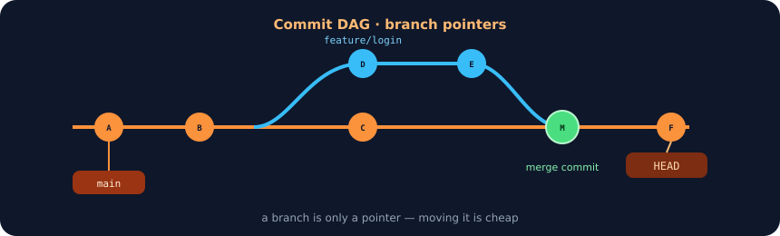
شکل ۱ — هر دایره یک کامیت است. پیکان به کامیت قبلی (والد) میرود. حلقه وجود ندارد؛ به این گراف DAG میگویند. شاخه فقط نام روی یکی از دایرههاست.
DAG یعنی Directed Acyclic Graph: گراف جهتدار بدون دور. اگر این یک جمله را حفظ کنی، merge (دو والد) و rebase (گرههای جدید) دیگر رمز نیستند.
| لایه | انتخاب ۲۰۲۶ | چرا؟ | جایگزین |
|---|---|---|---|
| VCS | Git ۲.۵۱+ | switch/restore پایدار، reftable | Mercurial فقط میراث |
| Host | GitHub | PR، Actions، Security، Copilot | GitLab / Gitea |
| ادیتور | VS Code + GitHub Pull Requests | Source Control، Graph، Review داخل IDE | JetBrains / Neovim |
| CLI همراه | GitHub CLI (gh) |
PR، Issue، Actions از ترمینال | hub قدیمی |
| کیفیت کامیت | Conventional Commits | changelog خودکار، semantic release | پیام آزاد |
| CI | GitHub Actions | OIDC، reusable workflow | Jenkins میراث |
| امنیت | Rulesets + signing + CodeQL | سیاست متمرکز، عرضهٔ قابلاثبات | فقط branch protection کلاسیک |
بعد از هر فرمان از خودت بپرس: فایل روی دیسک عوض شد، پیشنویس کامیت عوض شد، یا تاریخچهٔ ثبتشده؟ (اسامی دقیق این سه لایه در فصل ۳ است.)
تقریباً هر کار دو شکل دارد: یک فرمان و یک دکمه. اگر فقط یکی را بلد باشی، در تیم گیر میکنی.
حذف تاریخچهٔ ثبتشده سخت است، ولی حرکت اشتباه HEAD معمولاً تا حدود ۹۰ روز در reflog مانده. فصل ۸ دقیقاً میگوید کدام Undo کدام لایه را لمس میکند.
هفته ۱: فصل ۱–۱۰ — مدل ذهنی + Source Control از صفر (Ctrl+Shift+G)
هفته ۲: فصل ۱۱–۲۲ — همکاری واقعی روی GitHub
هفته ۳: فصل ۲۳–۳۲ — rebase، Actions، امنیت
هفته ۴: فصل ۳۳–۳۶ — کارگاه، اشتباهات، مصاحبه
Junior — Git و GitHub چه فرقی دارند؟ Git موتور نسخهبندی توزیعشده روی ماشین توست. GitHub سرویس میزبانی، PR، Issue، Actions و هویت تیمی است.
Mid — چرا Git معمولاً از SVN سریعتر حس میشود؟ چون کل تاریخچه روی رایانهٔ توست و هر فایل با هش محتوایش شناخته میشود. شبکه فقط وقتی لازم است که بخواهی با دیگران همگام شوی — نه برای هر مقایسه.
Senior — DAG یعنی چه و چرا مهم است؟ تاریخچه یک خط نیست؛ یک گراف است. Merge کامیتی با دو والد میسازد. Rebase کامیتهای جدید میسازد (هش عوض میشود). اگر گراف را ببینی، میفهمی چرا force-push روی main کار دیگران را میشکند.
switch/restore، VS Code، بعد GitHub، بعد امنیت و CI.فصل بعد: نصب Git، نام و ایمیل، کلید SSH و امضای کامیت — تا هویت تو در تاریخچه درست ثبت شود.
هر کامیت نام و ایمیل را داخل خودش ذخیره میکند. اگر این دو را غلط بگذاری، تاریخچه مال کس دیگری به نظر میرسد. این فصل را یکبار درست تنظیم کن.
user.name و user.email را درست — و ترجیحاً محلی — تنظیم کنیgh auth وارد شوی# Debian / Ubuntu sudo apt update && sudo apt install -y git gh # macOS brew install git gh # Windows (پاورشل بهعنوان Admin) winget install Git.Git GitHub.cli git --version # باید ۲.۵۱ یا جدیدتر باشد gh --version
در VS Code: از Command Palette (Ctrl+Shift+P) بنویس Git: Show Git Output. اگر Git پیدا نشود، مسیر را در git.path تنظیم کن.
دو هویت جدا وجود دارد و باید یکی باشند:
user.name و user.email که داخل هر کامیت نوشته میشود.اگر ایمیل کامیت با ایمیل حساب یکی نباشد، کنار کامیت در GitHub آواتار خاکستری میبینی و نشان Verified (تأیید امضا) نمیآید.
# سراسری — فقط اگر یک هویت داری git config --global user.name "rezaian-dev" git config --global user.email "mrezaian.dev@gmail.com" # بهتر: هویت داخل هر مخزن (توصیهٔ تیمی) git config user.name "rezaian-dev" git config user.email "mrezaian.dev@gmail.com" git config --global init.defaultBranch main git config --global pull.rebase false git config --global fetch.prune true git config --global rerere.enabled true git config --global core.editor "code --wait" git config --global alias.st status git config --global alias.lg "log --oneline --graph --decorate --all"
اگر نمیخواهی ایمیلت در تاریخچهٔ عمومی دیده شود، از noreply گیتهاب استفاده کن:
12345678+rezaian-dev@users.noreply.github.com
در Settings → Emails گزینهٔ Block command line pushes that expose my email را روشن کن.
HTTPS با token کار میکند اما SSH برای کار روزانه تمیزتر است.
ssh-keygen -t ed25519 -C "mrezaian.dev@gmail.com" # Enter — passphrase قوی بگذار eval "$(ssh-agent -s)" ssh-add ~/.ssh/id_ed25519 # کلید عمومی را کپی کن cat ~/.ssh/id_ed25519.pub
در GitHub: Settings → SSH and GPG keys → New SSH key. بعد:
ssh -T git@github.com # Hi rezaian-dev! You've successfully authenticated...
در VS Code وقتی Clone میکنی، اگر remote با git@github.com: شروع شود از همین کلید استفاده میشود.
GPG هنوز معتبر است اما SSH signing سادهتر است و همان کلید را دوباره مصرف میکند.
git config --global gpg.format ssh git config --global user.signingkey ~/.ssh/id_ed25519.pub git config --global commit.gpgsign true git config --global tag.gpgsign true
همان کلید عمومی را در GitHub بهعنوان Signing Key هم اضافه کن. بعد از آن، کامیتهایت نشان Verified میگیرند.
در Settings بگذار:
git.enableCommitSigning: true
دکمهٔ Commit از همین تنظیم پیروی میکند — لازم نیست هر بار پرچم -S بزنی.
gh auth login # GitHub.com → SSH → Login with browser gh auth status gh api user --jq .login # rezaian-dev
از این به بعد gh repo create، gh pr create و gh run list بدون token دستی کار میکنند.
{ "git.enabled": true, "git.autofetch": true, "git.confirmSync": false, "git.enableSmartCommit": false, "git.enableCommitSigning": true, "git.untrackedChanges": "separate", "git.branchProtection": ["main", "master"], "git.branchProtectionPrompt": "alwaysCommitToNewBranch", "git.rebaseWhenSync": false, "scm.defaultViewMode": "tree", "diffEditor.ignoreTrimWhitespace": false }
Git داخل VS Code سه لایه دارد. این کتاب هر فرمان را با هر دو مسیر یاد میدهد: ترمینال و این افزونهها.
| لایه | شناسهٔ افزونه | نقش |
|---|---|---|
| Git توکار | همراه VS Code | Source Control، Stage، Commit، Branch، Sync |
| GitHub Pull Requests | GitHub.vscode-pull-request-github |
Clone از GitHub، Checkout PR، ریویو اینلاین، Merge |
| Git Graph یا GitLens | mhutchie.git-graph / eamodio.gitlens |
DAG رنگی، blame خطی، مقایسهٔ کامیتها |
| GitHub Actions | github.vscode-github-actions |
وضعیت workflow کنار ادیتور |
نصب از خود ادیتور:
Ctrl+Shift+X → ExtensionsGitHub Pull Requests → InstallGit Graph → InstallCtrl+Shift+G باید پنل Source Control را باز کند — خانهٔ روزانهٔ Git در این کتاب؛ فصل ۱۰ و ۱۱ آن را تا تسلط کامل میروند.Commit: جعبهٔ پیام → Ctrl+Enter
شاخه: کلیک روی main در نوار وضعیت
Sync: آیکون ↻ کنار نام شاخه
PR: آیکون GitHub در Activity Bar
git commit -m "..."
git switch -c feat/x
git push -u origin HEAD
gh pr create --fill
قانون این کتاب: مفهوم را در ترمینال بفهم؛ کار روزانه را در VS Code انجام بده. Senior هر دو را بلداست.
Junior — چرا SSH بهتر از HTTPS است؟ کلید روی دیسک میماند، passphrase در agent کش میشود، و token PAT را هر چند ماه عوض نمیکنی.
Mid — تفاوت user.email و حساب GitHub؟ Git فیلد را داخل شیء commit مینویسد. GitHub با همان ایمیل کامیت را به پروفایل وصل میکند.
Senior — چرا امضا مهم است؟ بدون امضا هر کسی میتواند با user.name تو کامیت جعلی بسازد. Verified یعنی کلید ثبتشده در GitHub آن شیء را امضا کرده.
git --version حداقل ۲.۵۱ استuser.name / user.email با GitHub یکی استssh -T git@github.com سلام میدهدفصل بعد: سه درخت Git — جایی که ۸۰٪ سردرگمی متولد میشود.
Git فایلها را همزمان در سه جا نگه میدارد: آنچه در ادیتور میبینی، پیشنویس کامیت بعدی، و آخرین عکس ثبتشده. اگر این سه را قاطی کنی، reset و Save و Commit برایت یکی به نظر میرسند.
add، restore و commit دقیقاً چه چیزی را کپی میکنندGit فایلها را در سه لایه نگه میدارد:
git add یا دکمهٔ Stage فایل را از دیسک به این پیشنویس کپی میکند.commit این لایه را جلو میبرد.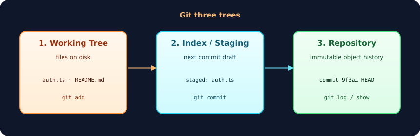
شکل ۲ — add از Working به Index میرود؛ commit از Index یک شیء commit میسازد.
status = diff(Working, Index) + diff(Index, HEAD)
دو ستون تغییرات در VS Code دقیقاً همین دو diff هستند.
git statusgit status -sb # ## main # M src/auth.ts # فاصله + M یعنی تغییر در Working، هنوز stage نشده # M src/api.ts # M در ستون اول یعنی staged # MM README.md # هم staged هم بعدش دوباره ویرایش شده # ?? notes.txt # untracked — Git اصلاً نمیشناسدش
در VS Code همین اطلاعات چنین دیده میشود:
| نشانه | معنی | اقدام |
|---|---|---|
| U | Untracked | Stage یا به .gitignore بسپار |
| M | Modified | Stage / Discard |
| A | Added | فایل جدید staged |
| D | Deleted | حذف staged یا بازیابی |
| C | Conflict | Resolve در ادیتور |
echo "v1" > hello.txt git add hello.txt # Working = Index (هر دو v1) HEAD هنوز ندارد git commit -m "v1" # هر سه = v1 echo "v2" > hello.txt # Working=v2 Index=v1 HEAD=v1 git add hello.txt # Working=v2 Index=v2 HEAD=v1 git commit -m "v2" # هر سه = v2
حالا میفهمی چرا «کامیت نکردم ولی Save کردم» تاریخچه را عوض نمیکند — Save فقط Working Tree است.
| فرمان | Working | Index | Repo |
|---|---|---|---|
| ویرایش در VS Code / Save | ✓ | ||
git add / Stage |
✓ | ||
git commit |
✓ | ||
git restore file |
✓ | ||
git restore --staged |
✓ | ||
git reset --soft |
✓ (HEAD حرکت) | ||
git reset --mixed |
✓ | ✓ | |
git reset --hard |
✓ | ✓ | ✓ |
--hard هر سه درخت را با کامیت هدف یکی میکند و تغییرات ذخیرهنشده را میکشد. در VS Code معادل Discard All Changes + حرکت HEAD است. تا فصل ۸ بدون تور ایمنی (reflog) نزدیکش نشو.
وقتی فایلی را Stage میکنی، از لیست Changes به Staged میپرد — یعنی کپی snapshot آن فایل به Index.
git add -p یا Stage انتخابی در VS Code (روی hunk). کامیت را مثل پاراگراف مینویسی نه مثل سطل زباله.
git add . کورکورانه. فایل env، آرتیفکت بیلد و رمز داخل کامیت میرود.
Junior — Staging یعنی چه؟ سبد خرید قبل از پرداخت. commit پرداخت است.
Mid — چرا Index وجود دارد؟ تا یک Working شلوغ را به چند کامیت معنادار بشکنی.
Senior — Index از نظر داده چیست؟ یک درخت مرتبشده از cache entryها (مسیر، mode، OID، stat) که commit آن را به یک tree object تبدیل میکند.
M در ستون اول و دوم status -sb را بلدیadd . ترجیح میدهیفصل بعد: اولین مخزن واقعی — init، add، commit، log.
در این فصل یک پوشه را به مخزن Git تبدیل میکنی، دو کامیت با پیام روشن مینویسی، و با log میبینی تاریخچه دقیقاً چه شکلی شده.
git init یا از VS Code بسازیlog را با گراف بخوانی--allow-empty و کامیت واقعی را بدانیmkdir git-lab && cd git-lab git init -b main # Initialized empty Git repository in .../.git/ echo "# Git Lab" > README.md git add README.md git status git commit -m "chore: bootstrap repository"
پرچم -b main شاخهٔ پیشفرض را master نمیگذارد. اگر فراموش کردی: git config --global init.defaultBranch main.
Ctrl+Shift+G)Ctrl+Enterاگر پنل خالی دیدی و دکمهٔ Initialize نبود، یا پوشه Git ندارد یا Git در PATH نیست.
از Conventional Commits استفاده میکنیم (فصل ۲۲ عمیق میشود):
type(scope): summary بدنهٔ اختیاری — چرا، نه چه.
انواع رایج: feat، fix، docs، chore، refactor، test، ci.
feat(auth): add refresh-token rotation
چرا: نوع + محدوده + فعل امری + نتیجه.
update یا fix bug یا asdf
تاریخچهٔ بیمعنی، git log را به زبالهدان تبدیل میکند.
در VS Code پیام را در جعبهٔ بالا مینویسی. Ctrl+Enter کامیت میکند. اگر Smart Commit روشن باشد و چیزی stage نشده باشد، همه چیز را قورت میدهد — در فصل ۲ آن را خاموش کردیم.
git log --oneline --decorate --graph --all git log -1 -p # آخرین کامیت + diff git show HEAD # معادل بالا git log --author="rezaian" --since="2 weeks ago" git shortlog -sn # چه کسی چقدر کامیت کرده
در VS Code:
.git چه خبر است؟ls .git # HEAD config description hooks info objects refs cat .git/HEAD # ref: refs/heads/main cat .git/refs/heads/main # 9f3a1c... ← هش کامیت فعلی
هنوز لازم نیست packfile را بفهمی (فصل ۳۰). فقط بدان: هر چیز ماندگار اینجاست؛ پاک کردن .git یعنی قتل تاریخچه.
اگر همین الان پیام را غلط نوشتی و هنوز push نکردهای:
git commit --amend -m "docs: fix readme title"
در VS Code: تیک Amend کنار دکمهٔ Commit (منوی کشویی ✓).
--amend هش را عوض میکند. اگر دیگران آن کامیت را گرفتهاند، تاریخچه دوپاره میشود. قانون: فقط کامیت محلیِ pushنشده.
Junior — git init چه میسازد؟ پوشهٔ .git با HEAD، objects، refs و config.
Mid — چرا پیام امری مینویسیم؟ کامیت را مثل وصله بخوان: «این وصله refresh-token را اضافه میکند.» نه «اضافه کردم.»
Senior — تفاوت git log -p و git show؟ show یک شیء را نمایش میدهد؛ log -p پیمایش تاریخچه با diff هر کامیت است.
main ساختهایgit lg (یا alias) گراف را نشان میدهد.git قلب مخزن استفصل بعد: اشیای Git — blob، tree، commit و جادوی hash.
Git هر فایل و هر کامیت را با یک اثرانگشت (هش) میشناسد. اگر حتی یک حرف پیام کامیت عوض شود، اثرانگشت عوض میشود — برای همین «ویرایش تاریخچه» در واقع ساختن کامیت جدید است، نه دستکاری فایل قدیمی.
cat-file و rev-parse یک کامیت را کالبدشکافی کنیhash("blob " + size + "\0" + content) → شناسهٔ فایل
اگر یک بیت عوض شود، شناسه عوض میشود. دو فایل یکسان در کل تاریخچه یک blobاند — این است دلیل ارزان بودن شاخه و سریع بودن Git.
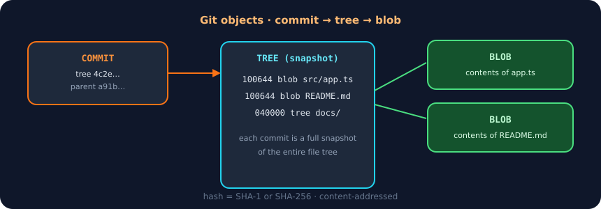
شکل ۳ — commit به tree اشاره میکند؛ tree به blobها و treeهای فرزند.
git rev-parse HEAD git cat-file -p HEAD git cat-file -p 'HEAD^{tree}' # در zsh حتماً نقلقول بگذار git ls-tree -r HEAD
خروجی commit شبیه این است:
tree 4c2e9a... parent a91b77... author rezaian-dev <mrezaian.dev@gmail.com> 1757400000 +0330 committer rezaian-dev <mrezaian.dev@gmail.com> 1757400000 +0330 feat(auth): add refresh-token rotation
چهار چیز هویت کامیت را میسازند: tree، والد(ها)، هویت نویسنده/زمان، پیام. --amend روی هر کدام دست بگذارد، هش جدید است.
git tag v1.0.0 # سبک: فقط یک ref git tag -a v1.0.0 -m "release" # شیء tag با امضا و پیام git cat-file -p v1.0.0
برای انتشار محصول همیشه annotated (و در فصل ۲۶ امضاشده) بساز.
| SHA-1 (میراث) | SHA-256 (آینده) | |
|---|---|---|
| طول | ۴۰ hex | ۶۴ hex |
| وضعیت ۲۰۲۶ | هنوز پیشفرض بسیاری از hostها | در Git ۲.۵۱+ برای مخزن جدید آماده |
| GitHub | پشتیبانی کامل | در حال گسترش — قبل از مهاجرت چک کن |
| آزمایش | — | git init --object-format=sha256 |
مخزن SHA-256 را نمیتوانی به ریموت SHA-1 پوش کنی. تا وقتی GitHub/تیم تو آماده نشده، روی SHA-1 بمان و فقط مفهوم را بدان.
Reftable (git init --ref-format=reftable) لایهٔ refs را سریع میکند، نه hash را. برای monorepoهای عظیم مفید است.
Git معمولاً ۷–۱۲ کاراکتر اول را میپذیرد (9f3a1c). در مخازن خیلی بزرگ ممکن است مبهم شود؛ core.abbrev را بالا ببر یا هش کامل را در اسکریپتها استفاده کن.
Junior — blob چیست؟ محتوای فایل، بدون نام. نام در tree ذخیره میشود.
Mid — چرا rename در Git «تشخیص» است نه شیء؟ چون blob همان است؛ tree فقط مسیر را عوض کرده. git log --follow این جابهجایی را حدس میزند.
Senior — commit تغییرناپذیر است یعنی چه؟ شیء در objects دیتابیس هرگز ویرایش نمیشود. «ویرایش تاریخچه» یعنی ساختن اشیای جدید و حرکت دادن اشارهگر شاخه.
cat-file -p HEAD را تفسیر میکنیفصل بعد: شاخه — ارزانترین اشاره در مهندسی نرمافزار.
شاخه کپی پروژه نیست. یک فایل کوچک داخل .git/refs/heads/ است که فقط هش یک کامیت را نگه میدارد (حدود ۴۰ کاراکتر). ساختن شاخه یعنی نوشتن همین فایل.
switch و switch -c کار کنیمسیر refs/heads/main فقط هش کامیت نوک شاخه را نگه میدارد. ساخت شاخه = نوشتن یک فایل جدید با یک هش. عوض کردن شاخه = عوض کردن اینکه HEAD به کدام فایل اشاره کند.
شکل ۴ — HEAD به شاخه اشاره میکند؛ شاخه به کامیت. وقتی کامیت میکنی، هر دو جلو میروند.
git branch -vv # شاخههای محلی + tracking git show-ref --heads cat .git/HEAD # ref: refs/heads/main
feat/authmainGit: Create Branch / Git: Checkout to...git switch -c feat/auth
git switch main
git switch -
git branch -d feat/auth فقط اگر merge شده؛ وگرنه Git رد میکند.
git branch -D feat/old حذف اجباری
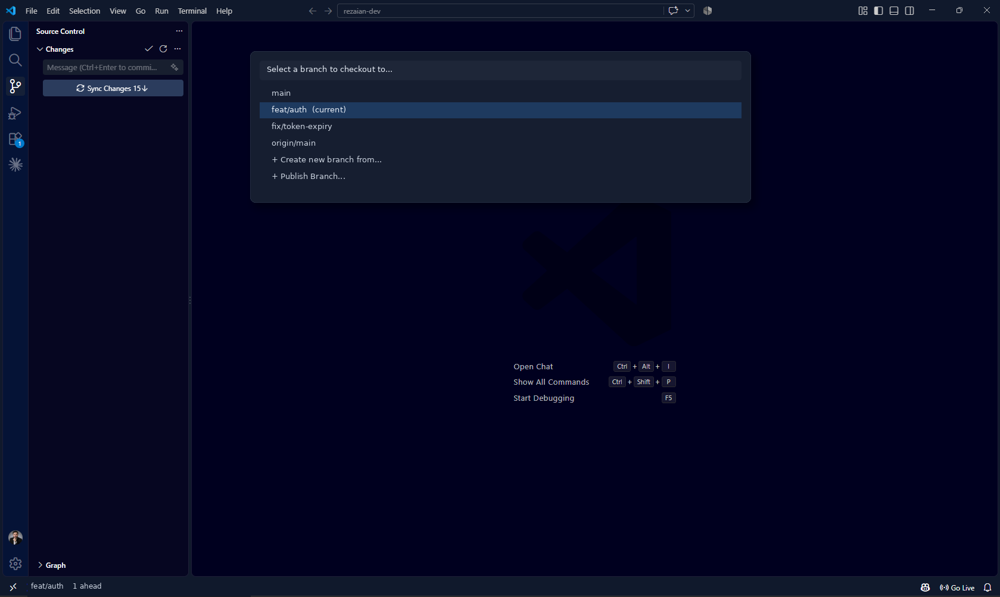
شکل ۴ب — کلیک روی نام شاخه در نوار وضعیت: تعویض، ساخت شاخهٔ جدید، Publish.
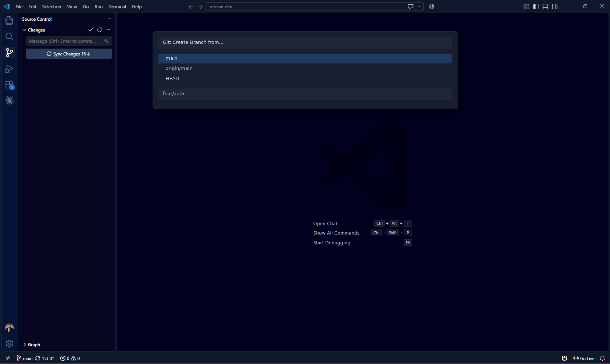
شکل ۴پ — Ctrl+Shift+P سپس Git: Create Branch from... معادل git switch -c.
checkout هم شاخه عوض میکرد هم فایل برمیگرداند. دو معنا = دو برابر باگ انسانی. از Git ۲.۵۱ فرمانهای switch و restore پایدار و توصیهشدهاند.
| پیشوند | استفاده | مثال |
|---|---|---|
feat/ |
قابلیت جدید | feat/jwt-refresh |
fix/ |
باگ | fix/token-expiry |
chore/ |
ابزار / وابستگی | chore/bump-actions |
hotfix/ |
تعمیر تولید | hotfix/500-login |
release/ |
آمادهسازی نسخه | release/1.4.0 |
از فاصله، اموجی و نامهای خیلی کلی (update, ali) پرهیز کن. GitHub شاخه را در URL میگذارد.
وقتی مستقیم روی یک کامیت checkout/switch کنی (نه روی شاخه)، HEAD به هش میچسبد نه به ref.
git switch --detach HEAD~3 # حداقل ۴ کامیت لازم است git switch -c rescue git switch main
در VS Code اگر Graph را بزنی و یک کامیت قدیمی را Checkout کنی، بنر زرد detached HEAD میآید. فوری شاخه بساز.
main و شاخههایی که دیگران track میکنند مقدساند. بازنویسی یعنی force-push و درد تیم. قانون را در فصل ۲۳ با گوشت و پوست حس میکنی.
git branch -a # محلی + remote git log --oneline --graph --decorate --all
در VS Code افزونهٔ Graph همین نقشه را رنگی میکشد — فصل ۱۱ کامل روی آن کار میکنیم.
Junior — ساخت شاخه فایلها را کپی میکند؟ خیر. فقط یک اشارهگر جدید.
Mid — تفاوت branch و tag؟ هر دو اشارهگرند؛ شاخه با هر commit حرکت میکند، تگ معمولاً ثابت میماند.
Senior — HEAD symbolic چیست؟ فایل HEAD معمولاً ref: refs/heads/main است نه خود هش. Detached یعنی HEAD مستقیم هش را نگه میدارد.
switch -c را بهجای checkout استفاده میکنیفصل بعد: ادغام — وقتی دو تاریخچه باید یکی شوند.
Merge یعنی دو خط تاریخچه را یکی کنی. اگر هر دو خط همان خطوط فایل را جور دیگری عوض کرده باشند، Git نمیداند کدام درست است — به آن تعارض میگویند و باید خودت انتخاب کنی.
--no-ff و --squash را بدانی کی استفاده کنیgit switch main git merge feat/auth
| نوع | کی رخ میدهد | نتیجه |
|---|---|---|
| Fast-forward | از وقتی شاخه را ساختی، main هیچ کامیت جدیدی نگرفته |
Git فقط برچسب main را روی همان کامیتهای شاخه جلو میکشد؛ کامیت ادغام ساخته نمیشود |
| Merge commit | هر دو طرف بعد از جدایی کامیت جدید دارند | یک کامیت جدید با دو والد ساخته میشود |
| Squash merge | معمولاً دکمهٔ GitHub | همهٔ کامیتهای شاخه در یک کامیت روی هدف خلاصه میشوند؛ جزئیات میانی در main نمیماند |
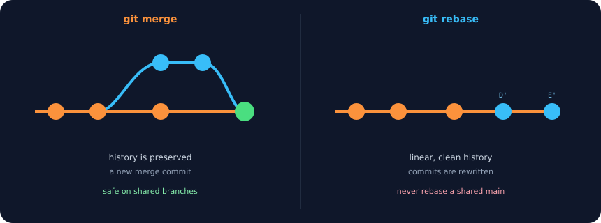
شکل ۵ — merge تاریخچه را حفظ میکند؛ rebase آن را خطی میکند (جزئیات در فصل ۲۳).
بسیاری از تیمها Create a merge commit را میخواهند تا هر PR یک گره قابلردیابی داشته باشد. معادل محلی: git merge --no-ff feat/auth.
تعارض وقتی است که Git نمیتواند دو تغییر روی یک hunk را ترکیب کند.
<<<<<<< HEAD return token; ======= return rotate(token); >>>>>>> feat/auth
سه نسخه در ذهن داشته باش:
HEAD)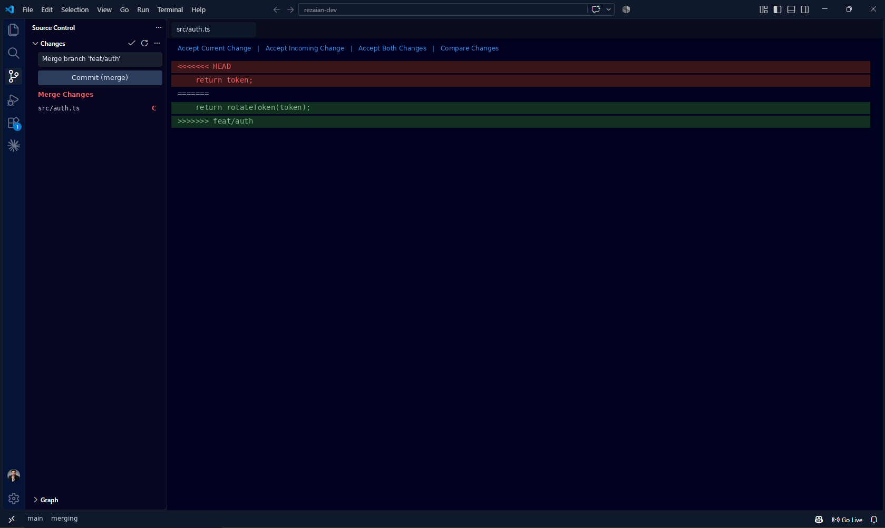
شکل ۶ — CodeLens: Accept Current، Accept Incoming، Accept Both، Compare Changes.
git merge --abort # پشیمانی قبل از commit git merge --continue # بعد از حل git diff --name-only --diff-filter=U
هر دو را پذیرفتن گاهی کد syntactically درست و semantically غلط میسازد. همیشه تست را اجرا کن.
git merge -X ours feat/x # در تعارض، ما برنده git merge -X theirs feat/x git log --merge # فقط کامیتهای درگیر تعارض git checkout --conflict=diff3 -- file
diff3 جد مشترک را هم نشان میدهد — برای تعارض سخت طلایی است. در VS Code: "merge-conflict.diff3": true (یا Merge Editor).
VS Code Merge Editor سهستونه (Incoming / Current / Result) را از Command Palette با Merge Conflict: Open Merge Editor باز میکند.
Junior — fast-forward یعنی چه؟ حرکت اشارهگر بدون کامیت جدید، چون تاریخچه خطی بوده.
Mid — چرا squash در main تاریخچه را «دروغ» میکند؟ چون چند کامیت واقعی به یک کامیت تبدیل میشوند؛ bisect و blame جزئیات را از دست میدهند — ولی PR تمیز میماند.
Senior — recursive در برابر ort؟ از Git ۲.۳۴ موتور پیشفرض ort است؛ سریعتر و پیشبینیپذیرتر از recursive قدیمی.
merge --abort را حفظی بلدیفصل بعد: Undo — نجات بدون وحشت.
Undo در Git یک فرمان نیست — چهار کار مختلف است. قبل از اجرا باید بدانی فایل روی دیسک را برمیگردانی، پیشنویس را خالی میکنی، اشارهگر شاخه را حرکت میدهی، یا یک کامیت جدیدِ خنثی میسازی.
restore را جایگزین checkout فایل کنیreflog کامیت «گمشده» را زنده کنی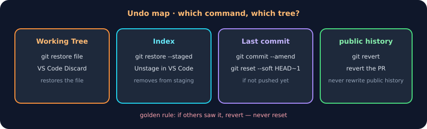
شکل ۷ — قانون طلایی: تاریخچهٔ عمومی را فقط با revert لمس کن.
git restore src/auth.ts # Working ← Index git restore --staged src/auth.ts # Index ← HEAD git restore --source=HEAD --staged --worktree src/auth.ts # هر دو درخت فایل = HEAD (معادل checkout -- file) git restore --source=main~3 README.md # نسخهٔ قدیمی را بیاور
restorerestore --staged... → Commit → Undo Last Commit = reset --softgit restore file
git restore --staged file
git reset --soft HEAD~1
git reflog برای نجات
فرض: A--B--C (HEAD) و میخواهی به B برگردی.
| فرمان | HEAD | Index | Working | استفاده |
|---|---|---|---|---|
--soft B |
B | محتوای C | محتوای C | کامیت را بشکن، تغییرات بماند staged |
--mixed B (پیشفرض) |
B | B | محتوای C | کامیت را بشکن، تغییرات unstaged |
--hard B |
B | B | B | همهچیز برود |
git reset --soft HEAD~1 # پیام/فایلها را دوباره بچین git reset HEAD~1 # همان، اما unstaged # git reset --hard HEAD~1 # فقط اگر مطمئنی
در VS Code منوی ... در Source Control: Commit → Undo Last Commit معمولاً --soft.
اگر push شده، تاریخچهٔ دیگران را تکهپاره میکنی. بهجایش git revert.
git revert HEAD # آخرین را خنثی کن git revert -m 1 <merge-sha> # خنثیکردن merge (والد ۱ = شاخهٔ هدف)
Revert یک کامیت جدید میسازد که تغییرات را برعکس اعمال میکند. تاریخچه دروغ نمیگوید.
در GitHub: روی PR دگمهٔ Revert همین کار را تمیزتر انجام میدهد.
هر حرکت HEAD در reflog ثبت میشود (معمولاً ۹۰ روز).
git reflog # e3a1... HEAD@{0}: reset: moving to HEAD~1 # 9f3a... HEAD@{1}: commit: feat(auth): ... git switch -c rescue HEAD@{1} # یا git reset --hard 9f3a1c
فایلی که هرگز add/commit نشده و Discard شده. Git آن را ندیده. از Local History خود VS Code (Timeline) کمک بگیر.
در VS Code: Timeline گاهی نسخههای محلی ذخیره میکند حتی بدون Git — آخرین تور ایمنی برای Untracked.
Junior — تفاوت restore و reset؟ restore فایلمحور است؛ reset اشارهگر شاخه را حرکت میدهد.
Mid — soft در برابر mixed؟ هر دو HEAD را حرکت میدهند؛ soft ایندکس را نگه میدارد.
Senior — revert یک merge چرا -m 1 میخواهد؟ چون merge دو والد دارد. باید بگویی «خط اصلی کدام است» تا diff معکوس معنا داشته باشد.
restore را بهجای checkout فایل میزنی--hard را برای کار عمومی ممنوع میدانیفصل بعد: gitignore، attributes و LFS.
اگر فایل رمز (مثل .env) یکبار git add شود، حتی بعد از حذف از پوشه در تاریخچه میماند. این فصل میگوید چه چیزی را از اول وارد Git نکنی و فایل بزرگ را کجا بگذاری.
.gitignore مؤثر بنویسی و الگوی negating را بفهمی.gitattributes را برای eol و diff تنظیم کنی# وابستگی node_modules/ .venv/ dist/ coverage/ # راز .env .env.* !.env.example # سیستم .DS_Store Thumbs.db # ادیتور — اختیاری: بعضی تیمها .vscode را commit میکنند .idea/
اولویت: الگوی محلی فایل → پوشهٔ والد → ریشه → .git/info/exclude → core.excludesFile جهانی.
git check-ignore -v src/.env # کدام قانون خورد؟ git rm --cached secrets.json # از Index بردار، فایل روی دیسک بماند
اگر قبلاً add شده، باید git rm --cached کنی. فقط نوشتن در gitignore کافی نیست.
در VS Code فایلهای ignoreشده در Explorer کمرنگاند. Source Control آنها را نشان نمیدهد مگر Show Ignored.
git config --global core.excludesFile ~/.gitignore_global echo ".DS_Store" >> ~/.gitignore_global
PDF، مدل سهبعدی، وزن شبکهٔ عصبی و فیلم با هر ویرایش کل blob را تکرار میکنند.
git lfs install git lfs track "*.pdf" git lfs track "*.psd" git add .gitattributes git add docs/book.pdf git commit -m "chore: store pdf in LFS" git lfs ls-files
روی GitHub فضای LFS جداگانه دارد (سهمیه). برای کتاب و بازی رایج است؛ برای کد منبع لازم نیست.
* text=auto eol=lf *.sh text eol=lf *.bat text eol=crlf *.png binary *.pdf filter=lfs diff=lfs merge=lfs -text package-lock.json merge=binary # جلوگیری از merge درهم JSON قفل
eol=lf جنگ CRLF ویندوز/لینوکس را در تیمهای چندسیستمی میکشد. در VS Code "files.eol": "\n".
فایل .gitattributes با linguist-vendored میتواند آمار زبان مخزن را درست کند — مفید برای monorepo.
Junior — node_modules را commit کنیم؟ هرگز. قفل (package-lock) را بله، پوشه را خیر.
Mid — تفاوت exclude و gitignore؟ info/exclude شخصی و غیرقابلپوش است؛ gitignore تیمی است.
Senior — LFS pointer چیست؟ فایل متنی کوچک با OID و اندازه که بهجای باینری در Git ذخیره میشود؛ محتوا روی LFS store است.
.env در تاریخچه نیستcheck-ignore -v را بلدیفصل بعد: Source Control در VS Code از صفر — میانبر Ctrl+Shift+G، با عکس نزدیک.
خانهٔ روزانهٔ Git در VS Code پنل Source Control است. میانبر ثابت این کتاب Ctrl+Shift+G است. اینجا هر کلیک را به ترتیب مینویسیم و برای هر تفاوت («چرا مال من اینطور است؟») دلیل دقیق میآید.
عکسهای این فصل از یک VS Code واقعیاند: ویندوز، زبان انگلیسی، تم تیره، مخزنی که Working Tree تمیز است و origin پانزده کامیت جلوتر. صفحهٔ تو باید دکمههای همانجا را داشته باشد، نه لزوماً همان عدد ۱۵ یا همان نام فایل.
| چیزی که در عکس میبینی | مال تو ممکن است | چرا؟ |
|---|---|---|
برچسب انگلیسی Source Control، Commit، Sync Changes |
فارسی: «کنترل منبع»، «ثبت»، «همگامسازی تغییرات» | زبان نمایش VS Code. موقعیت دکمه یکی است؛ فقط نوشته عوض میشود. |
| تم تیرهٔ سرمهای | تم روشن یا تم دیگر | رنگ عوض میشود؛ نام فرمانها عوض نمیشود. |
Sync Changes 15↓ |
Commit یا Publish Branch یا هیچ دکمهٔ آبی |
بستگی دارد تغییرات محلی داری یا نه، و آیا origin هست یا نه — پایین، سه حالت. |
حرف M کنار src/auth.ts |
فایل و حرف دیگر، یا لیست خالی | مثال کتاب است. تو فایل خودت را میبینی. |
| Graph پایین پنل | Graph نیست | نسخهٔ قدیمی VS Code، یا بخش جمع شده؛ فلش > را باز کن. |
میانبر Ctrl+Shift+G |
در مک گاهی باید Cmd نباشد؛ همین Ctrl است |
در VS Code روی مک هم پیشفرض Ctrl+Shift+G است نه Cmd. |
در شکلها متن فارسی نمیگذاریم (برعکس میشود). اگر VS Code تو فارسی است، همان دکمه را از روی جایگاه پیدا کن نه از روی املای کتاب.
یکی از این سه را بزن؛ هر سه باید همان ستون چپ را باز کنند:
Ctrl+Shift+G (ویندوز، لینوکس، مک)Ctrl+Shift+P → تایپ کن View: Show Source Control → Enterبعد از باز شدن باید ببینی: ستون سمت چپ با عنوان Source Control. ادیتور سمت راست سر جایش میماند.
اگر مال تو اینطور نیست:
| چه دیدی | علت | چه کار کن |
|---|---|---|
| هیچ پنلی باز نشد | فوکوس روی ترمینال است و میانبر قورت داده شد | یکبار روی ادیتور کلیک کن، دوباره Ctrl+Shift+G |
| پنل Explorer باز شد نه Git | آیکون اشتباه (دو سند بالا) | آیکون سوم/چهارم Activity Bar؛ یا همان Palette |
| ستون آمد ولی نوشته Git not found / Git not installed | VS Code فایل git.exe را پیدا نکرده |
Palette → Git: Show Git Output. Settings → git.path را به مسیر نصب Git بده. از نو VS Code را باز کن |
| ستون آمد، کاملاً خالی، بدون Message | پوشه باز نیست | File → Open Folder روی پوشهٔ پروژه |
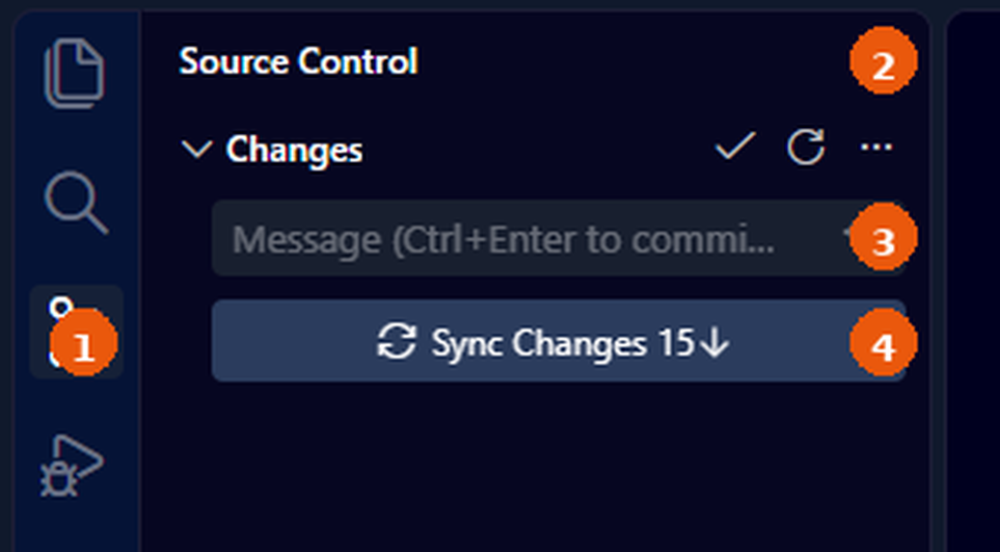
شکل ۹ — برش نزدیک. شمارهها را با فهرست زیر تطبیق بده. دکمهٔ آبی اینجا Sync است نه Commit؛ برای تو ممکن است برعکس باشد.
··· بالا-راست. یک کلیک روی ··· منوی Fetch / Pull / Push / Stash را باز میکند (فصل ۱۱).Ctrl+Enter فقط وقتی کار میکند که فوکوس همین جعبه باشد.پایین همان ستون، بدون عوض کردن پنل:
> یا روی کلمهٔ Graph. اگر نبود، VS Code را بهروز کن یا Palette → Git: View History.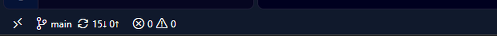
شکل ۹ب — یک کلیک روی main. عدد ↓ و ↑ مال این مخزن است؛ مال تو ۰ و ۰ هم طبیعی است.
اگر نوار وضعیت شاخه نشان نمیدهد: یا پوشه Git ندارد، یا Git پیدا نشده. اول همان جدول «اگر مال تو اینطور نیست» را بالا ببین.
VS Code یک دکمهٔ اصلی دارد. برچسب را بخوان؛ حدس نزن.
یعنی پوشهای که Open Folder کردهای فایل .git ندارد.
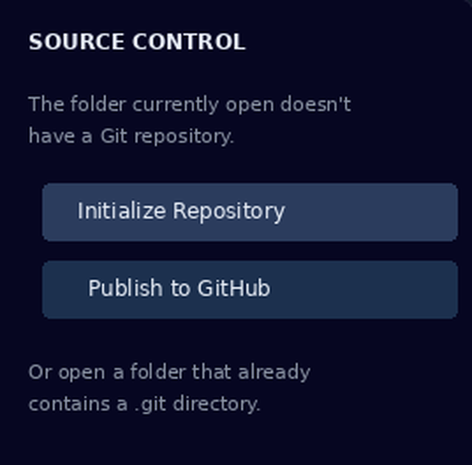
شکل ۹پ — فقط وقتی `.git` نیست این دو دکمه را میبینی.
کلیکها:
File → Open Folder — پوشهٔ خود پروژه را انتخاب کن، نه درایو و نه پوشهٔ والد.Ctrl+Shift+G.git init. بعد از کلیک باید جعبهٔ Message ظاهر شود و اگر فایلی باشد، لیست Changes پر شود..gitignore بساز (Ctrl+N، ذخیره با همین نام) تا node_modules در Changes نیاید.اگر بعد از Initialize هنوز همان دو دکمه را میبینی: پوشهٔ اشتباه باز است. در Explorer باید .git را (گاهی مخفی) ببینی. File → Open Folder را تکرار کن.
اگر Publish خاکستری است یا خطا میدهد: Accounts پایین Activity Bar → Sign in to GitHub. بدون ورود، Publish کار نمیکند؛ Initialize کار میکند.
یعنی مخزن هست، فایل ذخیرهشدهٔ تغییرکرده برای کامیت نداری، ولی با origin همتراز نیستی.
۱۵↓ = روی سرور ۱۵ کامیت هست که تو نداری → Sync تقریباً pull است.↑۳ = تو ۳ کامیت داری که سرور ندارد → Sync تقریباً push است.لیست Changes خالی در این حالت موفقیت است (nothing to commit, working tree clean)، نه اینکه Git خراب باشد.
اگر Sync را زدی و از تو تأیید خواست: تنظیم git.confirmSync روشن است — Yes بگو یا در Settings خاموشش کن.
اگر Sync خطا داد (rejected / diverged): فصل ۱۱ — اول Fetch، بعد Pull یا Pull (Rebase). Force نزن.
یعنی حداقل یک فایل در Changes یا Staged هست.
اگر تو Commit میبینی و کتاب Sync: تو فایل ذخیرهنشده یا تغییرکرده داری؛ کتاب در آن عکس Working Tree تمیز نشان میدهد. هر دو درستاند.
هدف: یک فایل را عوض کنی و در تاریخچه ثبت شود.
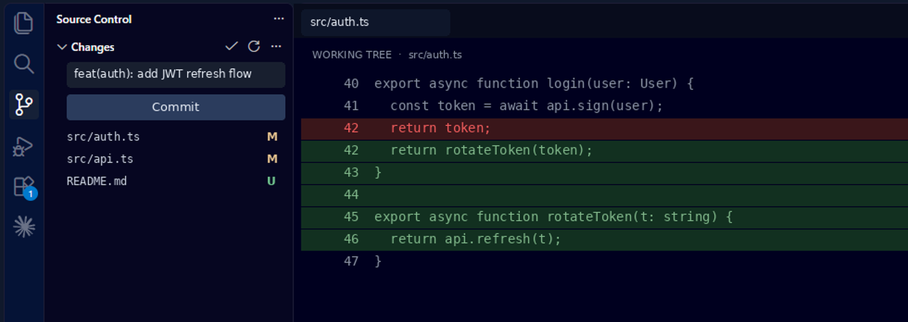
شکل ۱۰ — بعد از مرحلهٔ ۴ باید چیزی شبیه این ببینی: پیام، فایلها با M/U، diff سبز/قرمز.
فایل را در ادیتور عوض کن و Ctrl+S بزن.
باید ببینی: روی آیکون Git عدد میآید؛ فایل در Changes ظاهر میشود.
اگر نیامد: Save نشده، یا فایل داخل .gitignore است، یا پوشهٔ دیگری Open است.
Ctrl+Shift+G.
باید ببینی: نام فایل + حرف M یا U.
یک کلیک روی نام فایل در Changes.
باید ببینی: سمت راست، diff. خط قرمز = حذف، سبز = اضافه.
اگر سمت راست همان Welcome VS Code ماند: روی نام فایل کلیک نشده؛ روی فضای خالی ستون کلیک کردهای.
یک کلیک روی + سمت راست همان فایل (وقتی نشانگر روی ردیف است ظاهر میشود). معادل git add.
باید ببینی: فایل از Changes به Staged Changes میپرد.
اگر + نبود: نشانگر را روی ردیف فایل ببر. در بعضی تمها + فقط hover است. یا Palette → Git: Stage Changes.
یک کلیک داخل جعبهٔ Message و بنویس مثلاً feat(auth): add JWT refresh flow.
اگر جعبه غیرفعال است: هنوز Staged نداری و Smart Commit خاموش است — مرحلهٔ ۴ را بزن. یا فوکوس روی ادیتور است.
Ctrl+Enter (مک: Cmd+Enter) یا یک کلیک روی دکمهٔ Commit.
باید ببینی: لیست خالی میشود، دکمه ممکن است به Sync/Publish عوض شود، نوار وضعیت ↑1 بگیرد اگر remote داری.
اگر کلیک Commit همهٔ فایلها را برد نه فقط یکی: git.enableSmartCommit روشن است. Settings → این گزینه را Off کن. از این به بعد بدون Stage، دکمه Commit کار نمیکند یا هشدار میدهد.
اگر خطا Signing failed / secret key: فصل ۲ — امضا روشن است ولی کلید SSH signing روی این ماشین نیست. موقتاً git.enableCommitSigning را Off کن یا کلید را بساز.
اگر خطا Please tell me who you are: user.name و user.email ست نشده — فصل ۲.
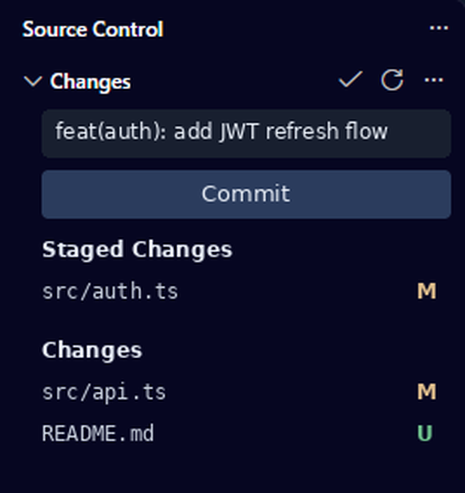
شکل ۱۰ب — بالا میرود داخل کامیت؛ پایین هنوز نمیرود. اگر فقط یک لیست میبینی، یا چیزی Stage نکردهای یا Untracked جداست.
| میخواهی | کلیک دقیق | باید ببینی |
|---|---|---|
| فایل برود برای کامیت | + روی ردیف در Changes |
ردیف میپرد به عنوان Staged Changes |
| پشیمان از Stage | - روی ردیف در Staged |
برمیگردد به Changes؛ فایل روی دیسک همان است |
| همه را Stage | + روی نوار عنوان Changes (نه روی فایل) |
همه میروند بالا |
| تغییرات فایل روی دیسک دور ریخته شود | راستکلیک روی ردیف Changes → Discard Changes → تأیید | فایل از لیست میرود؛ محتوای ادیتور به نسخهٔ قبلی برمیگردد |
اگر Staged Changes را بهعنوان عنوان جدا نمیبینی: هنوز + نزدی. با Smart Commit روشن، ممکن است بدون این عنوان هم Commit همه را بگیرد — برای همین خاموشش کردیم.
اگر Discard را زدی و فایل برگشت: Untracked (U) را Discard کردن یعنی حذف فایل از دیسک. VS Code معمولاً «Are you sure?» میپرسد. اگر پرسید و Yes گفتی، از Timeline برگردان (پایین فصل).
اگر Untrackedها ته یک لیست قاطیاند نه گروه جدا: Settings → git.untrackedChanges را بگذار separate.
hunk = چند خط سبز/قرمز پشتسرهم. معادل git add -p.
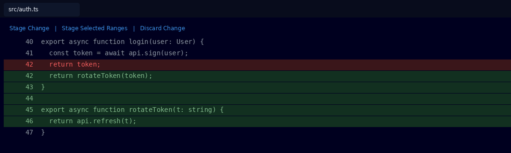
شکل ۱۰پ — این سه لینک آبی فقط وقتی فایل را از Changes باز کرده باشی بالای hunk ظاهر میشوند.
باید ببینی: اگر فقط بخشی Stage شد، فایل هم در Staged میماند هم در Changes (حرف گاهی M دو جا). این درست است.
اگر لینک آبی نبود:
diffEditor.renderSideBySide فرق ندارد؛ لینکها باید باشند. VS Code را بهروز کن.یک کلیک روی فلش ▾ سمت راست دکمهٔ Commit (نه خود Commit).
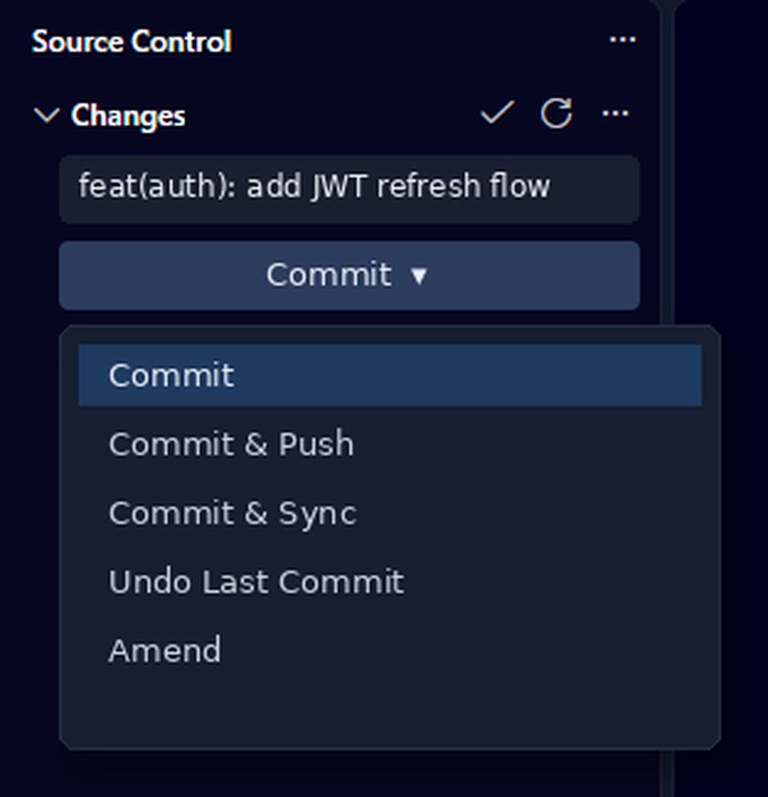
شکل ۱۰ت — اگر فلش را نمیبینی، دکمه هنوز Commit نیست (Sync/Publish است) یا عرض ستون خیلی کم است؛ ستون را بکش عریضتر کن.
| کلیک روی | چه میشود | اگر مال تو خاکستری / نیست |
|---|---|---|
| Commit | فقط ثبت محلی | باید Staged یا Smart Commit داشته باشی |
| Commit & Push | ثبت + ارسال به origin | origin نباشد → اول Publish Branch |
| Commit & Sync | ثبت + pull/push | tracking نداشته باشی، Push جدا بزن |
| Undo Last Commit | آخرین کامیت باز میشود، فایلها Staged میمانند | کامیت نداری |
| Amend | آخرین کامیت را با Stage فعلی و پیام جدید عوض میکند | بعد از push نزن |
هش عوض میشود. اگر همکار آن کامیت را گرفته، تاریخچه دوپاره میشود.
Ctrl+Enter فقط داخل جعبهٔ Message کامیت میزند. اگر فوکوس روی ادیتور باشد، ممکن است کار دیگری بکند یا هیچ.
یک کلیک داخل Message، بعد Ctrl+Enter. اگر عادت شد: بعد از Stage، کلیک Message، میانبر.
| کار | کلیک / کلید | شرط |
|---|---|---|
| باز کردن پنل | Ctrl+Shift+G |
— |
| کامیت | Ctrl+Enter |
فوکوس روی Message |
| Palette | Ctrl+Shift+P سپس Git: |
— |
| Diff | Enter روی ردیف فایل | فوکوس لیست Changes |
| Stage همه | Git: Stage All Changes |
— |
کلیکها: آیکون Explorer بالا-چپ Activity Bar (دو سند) → فایل را در درخت انتخاب کن → پایین همان ستون تب Timeline را باز کن (اگر جمع است، عنوان Timeline را کلیک کن).
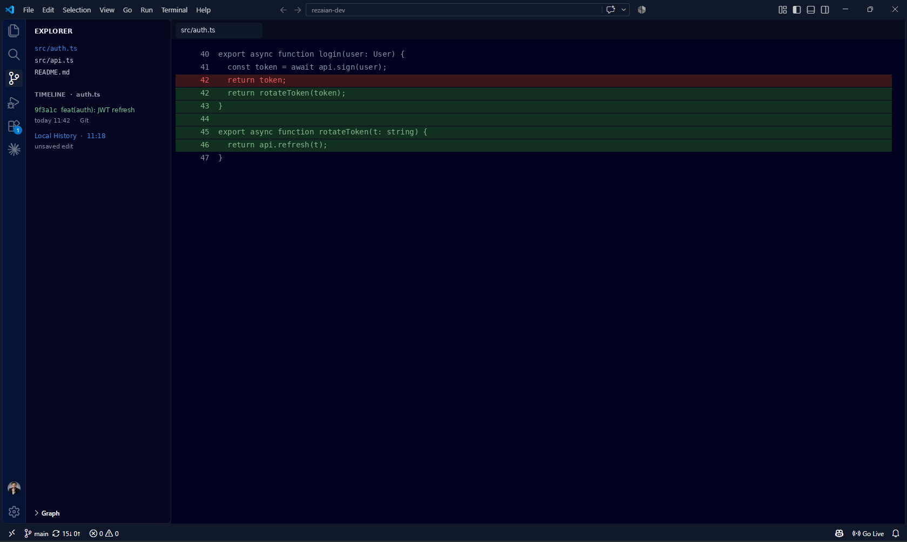
شکل ۱۰ث — اگر Timeline خالی است، فایل را انتخاب نکردهای یا Git در این پوشه نیست.
یک کلیک روی یک ردیف Timeline آن نسخه را مقایسه میکند. Local History برای Discard فایل Untracked است.
تمرین ۱. پوشهٔ خالی Open Folder → باید Initialize ببینی → کلیک Initialize → README.md بساز و Save → باید U در Changes → + → Message docs: add readme → Ctrl+Enter → باید لیست خالی شود.
تمرین ۲. سه فایل را Save کن → فقط روی یکی + → Commit → باید دو فایل در Changes مانده باشد. اگر هر سه رفتند، Smart Commit را Off کن و تمرین را تکرار کن.
تمرین ۳. یک فایل را چند خط عوض کن → از Changes باز کن → فقط بعضی خطها را Stage Selected Ranges بزن → باید فایل هم بالا هم پایین باشد.
تمرین ۴. Discard یک M → از Timeline برگردان.
Junior — چرا Save کافی نیست؟ Save فقط فایل روی دیسک را عوض میکند. تاریخچه با کلیک Commit ساخته میشود.
Mid — چرا مال من دکمه Commit است و در عکس Sync؟ چون تو تغییر ذخیرهشده داری و عکس کتاب Working Tree تمیز + origin جلوتر را نشان میدهد. دکمه بر اساس وضعیت عوض میشود.
Senior — Publish to GitHub دقیقاً بعد از چند کلیک چه میسازد؟ ریپو، origin، و push -u. بدون Sign in، همان کلیک پنجرهٔ ورود باز میکند نه خطا.
+ → Message → Ctrl+Enter را بدون حدس میرویفصل بعد: همان پنل، سطح فوقپیشرفته — با همین قرارداد «کلیک / باید ببینی / اگر فرق داشت».
Graph، شاخه، Sync، تعارض، rebase و PR همه از همان Ctrl+Shift+G میآیند. مثل فصل ۱۰: هر کار یعنی چند کلیک مشخص، چه باید ببینی، و اگر مال تو فرق داشت یعنی چه.
کلیکها برای باز شدن:
Ctrl+Shift+G.> دیدی، همان را باز کن).Ctrl+Shift+P → Git: View History → Enter.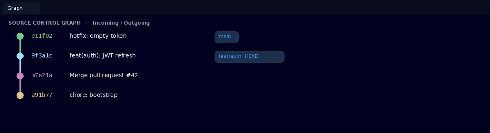
شکل ۱۱ — برش نزدیک. رنگها و هشها مثالاند؛ تو کامیتهای مخزن خودت را میبینی.
باید ببینی: خطهای رنگی، هش کوتاه، پیام کامیت، گاهی برچسب main / HEAD.
اگر مال تو اینطور نیست:
| چه دیدی | علت | چه کار کن |
|---|---|---|
| اصلاً Graph در ستون نیست | VS Code قدیمیتر از حدود ۱.۹۷ | VS Code را بهروز کن؛ یا افزونهٔ Git Graph / GitLens |
| Graph باز شد ولی یک نقطه است | مخزن فقط یک کامیت دارد | طبیعی است |
| Incoming خالی است با اینکه همکار push کرده | Fetch نشده | منوی ··· → Fetch (پایین) |
| راستکلیک منوی کوتاه دارد | روی پیام کلیک کردهای نه روی گره، یا افزونه منو را عوض کرده | روی دایرهٔ کامیت راستکلیک کن |
راستکلیک روی یک دایره / ردیف کامیت، بعد یک کلیک روی فرمان:
| فرمان | بعد از کلیک چه میشود | اگر ترسیدی |
|---|---|---|
| Checkout | HEAD میرود روی آن کامیت | اگر شاخه نبود، نوار زرد detached میآید → فوری Create Branch |
| Create Branch | جعبهٔ نام میپرسد | Enter بزن؛ معادل git switch -c |
| Cherry Pick | یک کامیت جدید روی شاخهٔ فعلی | تعارض آمد = فصل تعارض همین صفحه |
| Revert | یک کامیت خنثیکننده میسازد | برای main مشترک همین را بزن نه Reset |
| Reset Current Branch to Here | میپرسد Soft/Hard | Hard را روی شاخهٔ مشترک نزن |
| Compare with HEAD | diff باز میشود | بیخطر |
کلیک ۱: پایین-چپ پنجره، روی نام شاخه (مثلاً main).
باید ببینی: فهرست بالا وسط ادیتور (Quick Pick).
شکل ۱۱ب — اگر این فهرست نیامد، روی نام شاخه کلیک نشده یا Git پیدا نشده.
کلیک ۲ — تعویض: روی نام شاخهٔ دیگر.
باید ببینی: نوار وضعیت همان نام را میگیرد؛ فایلهای ادیتور عوض میشوند.
اگر خطا Your local changes would be overwritten: تغییرات ذخیرهشده داری. اول Commit یا Stash (منوی ··· → Stash)، بعد دوباره نام شاخه را کلیک کن.
کلیک ۲ — ساختن: روی + Create new branch from... → یک کلیک روی پایهای که میخواهی (main) → نام را تایپ کن مثلاً feat/auth → Enter.
شکل ۱۱پ — همین کار از Palette با Git: Create Branch from... هم میشود.
کلیک Publish Branch: در همان فهرست یا روی دکمهٔ ابری نوار وضعیت. اولین push است (-u).
اگر Publish میخواهد وارد GitHub شوی: Accounts پایین Activity Bar → Sign in. بدون origin، دکمهٔ اصلی پنل بهجای Sync میماند Publish.
اگر شاخهٔ جدید در فهرست نیست: هنوز Enter ساختن را نزدی، یا refresh لازم است: ··· → Refresh.
کلیک: بالا-راست ستون Source Control روی ··· (شمارهٔ ۲ آناتومی فصل ۱۰).
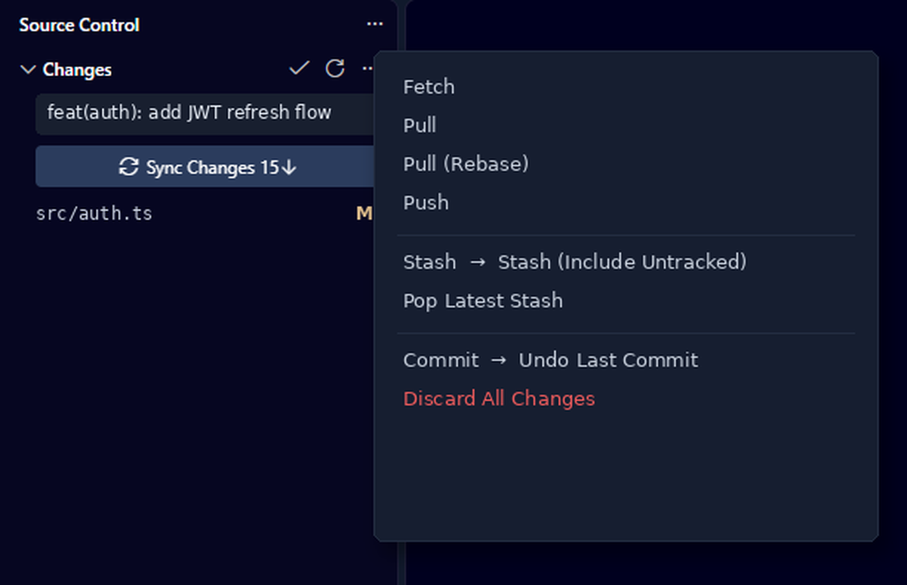
شکل ۱۱ت — ترتیب پیشنهادی: اول Fetch، نگاه به ↓↑، بعد Pull یا Push. Sync میانبر هر دوست.
| کلیک روی | باید بعدش ببینی | مال تو فرق دارد اگر |
|---|---|---|
| Fetch | عدد ↓ در نوار وضعیت زیاد شود، Graph Incoming پر شود؛ فایلها عوض نمیشوند | اینترنت/SSH نیست؛ یا origin نداری |
| Pull | فایلها ممکن است عوض شوند؛ ↓ صفر شود | تعارض → بخش بعد. اگر rebaseWhenSync روشن باشد ممکن است rebase شروع شود |
| Pull (Rebase) | اگر تعارض باشد نوار زرد Rebase | روی main مشترک نزن |
| Push | ↑ صفر شود | rejected = کسی push کرده؛ Fetch کن نه Force |
| Sync | ترکیب pull/push | اگر confirmSync روشن باشد یک Yes اضافه میپرسد — این «خراب بودن» نیست |
| Stash (Include Untracked) | Changes خالی میشود | بدون Include، فایلهای U میمانند و switch شکست میخورد |
| Undo Last Commit | فایلها برمیگردند به Staged | اگر push کرده باشی، بعداً Push rejected میشود |
| Discard All Changes | همهٔ فایلهای M از لیست میروند | پنجرهٔ Are you sure؟ — Yes یعنی از دست رفتن کار ذخیرهنشده |
نوار وضعیت ↑1 ↓2 یعنی ۱ کامیت برای push و ۲ برای pull. عدد تو با کتاب یکی نمیشود و نباید بشود.
تعارض فقط بعد از Merge / Pull / Cherry-pick / Rebase میآید. اگر هیچکدام را نزدی و C دیدی، احتمالاً merge ناتمام قبلی مانده: Palette → Git: Abort Merge.
باید ببینی: در Source Control عنوان Merge Changes و فایل با حرف C. دکمهٔ اصلی ممکن است بشود Accept Merge / Commit (merge).
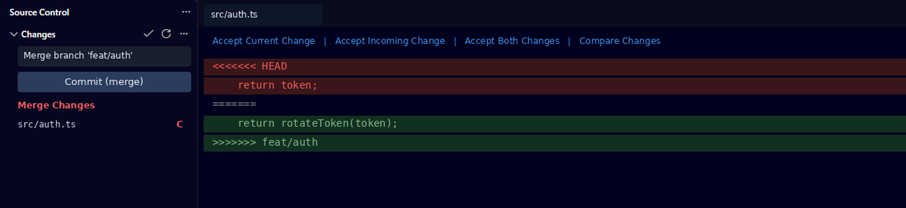
شکل ۱۱ث — نوار آبی چهار فرمان فقط روی فایل C بازشده از Source Control است.
کلیکها:
HEAD / Ours)Ctrl+S.+ همان فایل (Stage). حرف C باید برود.اگر نوار Accept نبود: Palette → Merge Conflict: Open Merge Editor — سه ستون Incoming / Current / Result. Result را درست کن → Accept Merge.
اگر هنوز C میماند: Save و Stage را نزدی. یا چند تعارض در همان فایل است — همه را Accept کن.
پشیمانی قبل از مرحلهٔ ۵: Palette → Git: Abort Merge. بعد از Commit دیگر abort نیست؛ باید revert.
بعد از Pull (Rebase) یا Git: Rebase Branch... اگر تعارض باشد:
باید ببینی: در پنل «Rebase in progress»، در بالا ادیتور نوار زرد، دکمههای Continue / Abort.
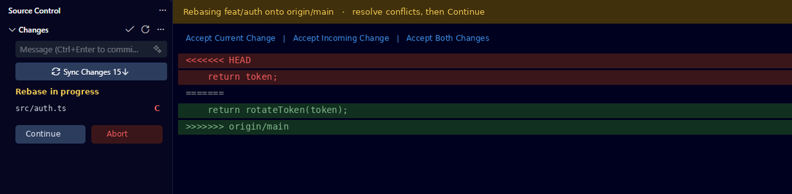
شکل ۱۱ج — تا این نوار هست، دکمهٔ معمولی Commit را نزن. VS Code عمداً کامیت عادی را قفل یا گمراهکننده میکند.
کلیکها:
+ (Stage).git rebase --continue).اگر Continue خاکستری است: هنوز همهٔ فایلهای C را Stage نکردهای، یا Message rebase خالی است — جعبهٔ Message را خالی نگذار.
پشیمانی: یک کلیک Abort. همه چیز برمیگردد به قبل از rebase.
اگر وسط rebase VS Code را بستی و باز کردی: نوار زرد باید برگردد. اگر نماند، Palette → Git: Continue Rebase یا Abort Rebase.
کلیکها: File → Add Folder to Workspace → پوشهٔ دوم که خودش .git دارد.
باید ببینی: در Source Control چند عنوان Repository. یک کلیک روی عنوان، آن مخزن را جمع/باز میکند.
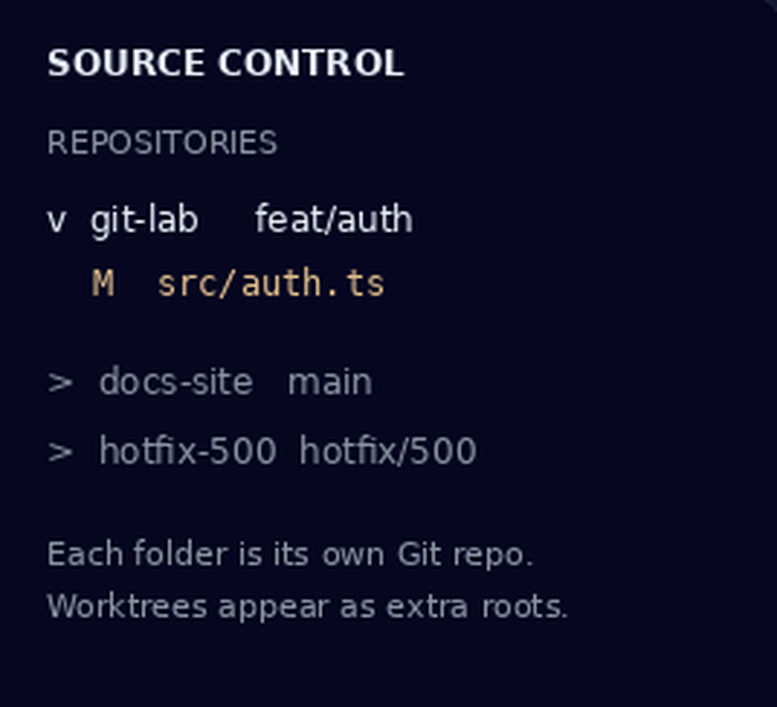
شکل ۱۱چ — اگر فقط یکی میبینی، پوشهٔ دوم Git ندارد یا هنوز Add Folder نکردهای.
اگر Commit روی مخزن غلط نشست: عنوان همان Repository را باز کن، بعد Message را بزن. VS Code روی مخزن «فعال» کامیت میکند.
worktree: در ترمینال git worktree add -b hotfix/500 ../hotfix main بعد File → Add Folder روی ../hotfix. یک شاخه در دو worktree همزمان باز نمیشود — پیام خطا را با Stash یا عوض کردن شاخه حل کن.
Source Control توکار PR نمیسازد. باید افزونهٔ GitHub Pull Requests نصب باشد.
کلیک نصب: Activity Bar آیکون Extensions (یا Ctrl+Shift+X) → جستوجو GitHub Pull Requests → Install → Accounts پایین Activity Bar → Sign in to GitHub → مرورگر Allow.
اگر آیکون GitHub در Activity Bar نیامد: افزونه نصب نشده یا غیرفعال است. View → Appearance → Activity Bar را چک کن.
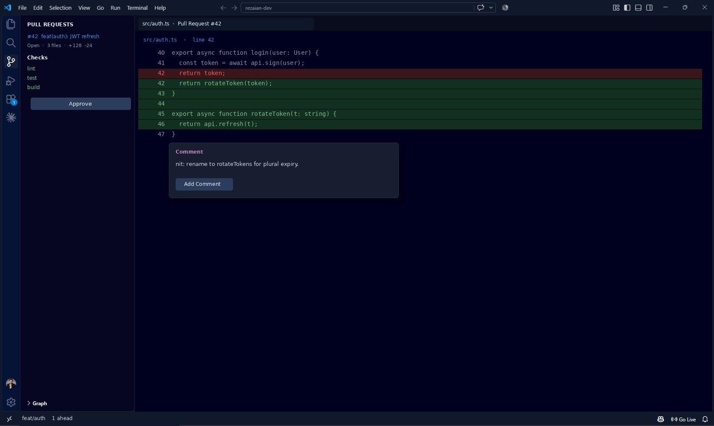
شکل ۱۲ — این نما مال افزونه است نه ستون Git. اگر ندیدی، Sign in نشده.
ساخت PR از شاخهٔ فعلی:
Ctrl+Shift+P → GitHub Pull Requests: Create Pull Request.main) را تأیید کن → Create.اگر Create خطا میدهد no upstream: Publish Branch را جا انداختی.
ریویو: آیکون GitHub → یک کلیک روی PR → Checkout → در Files Changed روی خط کلیک → کامنت → Approve.
اگر Checkout PR فایلهای تو را overwrite میکند: اول Commit یا Stash از ستون Source Control.
Ctrl+, → جستوجوی هر کلید:
{ "git.enabled": true, "git.autofetch": true, "git.confirmSync": true, "git.enableSmartCommit": false, "git.enableCommitSigning": true, "git.untrackedChanges": "separate", "git.branchProtection": ["main", "master"], "git.branchProtectionPrompt": "alwaysCommitToNewBranch", "git.rebaseWhenSync": false, "git.autoStash": true, "scm.defaultViewMode": "tree", "scm.repositories.visible": 8, "diffEditor.ignoreTrimWhitespace": false, "diffEditor.hideUnchangedRegions.enabled": true }
| دیدی | احتمالاً این تنظیم |
|---|---|
Commit بدون + همه را برد |
enableSmartCommit روشن — Off کن |
روی main کامیت زدی، VS Code شاخهٔ جدید ساخت |
branchProtection — عمدی است |
| Sync ناگهان rebase شروع کرد | rebaseWhenSync روشن |
| قبل از Pull فایلها ناپدید شدند و بعد برگشتند | autoStash — stash موقت، ترس ندارد |
| Untracked ته لیست قاطی است | untrackedChanges را separate کن |
| هر Sync یک دیالوگ Yes/No | confirmSync — سلیقه است |
Ctrl+Shift+P، تایپ Git:، Enter روی فرمان. اگر فرمان در فهرست نیست: یا پوشه مخزن ندارد، یا Git پیدا نشده (Git: Show Git Output).
Stage All Changes · Commit · Undo Last Commit · Push · Pull · Pull (Rebase) · Fetch · Sync · Create Branch from... · Checkout to... · Merge Branch... · Rebase Branch... · Publish Branch · Stash · Continue Rebase · Abort Rebase · Abort Merge · View History · Show Git Output
Mid — چرا Sync من merge ساخت و مال همکار rebase؟ تنظیم git.rebaseWhenSync فرق دارد. از روی دکمه حدس نزن؛ منوی ··· را بخوان.
Senior — Checkout PR چه کلیکهایی زیرش است؟ Sign in، fetch همان ref، switch به آن شاخه. اگر Changes خالی نبود، VS Code اول Stash/Commit میخواهد.
··· یک Fetch جدا زدهای نه فقط Syncفصل بعد: diff، blame، log و bisect — دیدن تغییر با چشم مسلح.
برای فهمیدن «چه عوض شد» فایل کامل را نخوان — تفاوت دو نسخه را بخوان. این فصل سه نوع diff، فیلتر log، و پیدا کردن کامیت خراب با bisect را جدا میکند.
log را فیلتر کنی تا در ده هزار کامیت گم نشویbisect باگ را در log₂(n) قدم پیدا کنیgit diff # Working vs Index git diff --staged # Index vs HEAD git diff main...HEAD # سه نقطه: از جد مشترک git diff main..HEAD # دو نقطه: تفاوت نوکها
A...B یعنی «تغییرات B از وقتی از A جدا شد» — دقیقاً همان چیزی که PR نشان میدهد. A..B نوک A را با نوک B مقایسه میکند و ممکن است تغییرات نامرتبط A را هم بیاورد.
در VS Code کلیک روی فایل Changes = git diff. کلیک روی Staged = git diff --staged. Open Changes با Alt گاهی side-by-side را عوض میکند.
{ "diffEditor.renderSideBySide": true, "diffEditor.ignoreTrimWhitespace": false, "diffEditor.hideUnchangedRegions.enabled": true }
hideUnchangedRegions در فایلهای بزرگ ۲۰۲۶ نجاتدهنده است.
git log --grep="refresh" -i git log -S "rotateToken" -p # pickaxe: کی این رشته آمد/رفت؟ git log -G "function rotate" -p # regex روی diff git log --since="2026-01-01" --until="2026-03-01" -- src/auth.ts git log --no-merges --first-parent # خط اصلی محصول
--first-parent روی main پر از merge، داستان محصول را میخواند نه داستان شاخهها را.
git bisect start git bisect bad # HEAD خراب است git bisect good v1.2.0 # این تگ سالم بود # Git وسط را checkout میکند — تست کن git bisect good # یا bad git bisect reset
اسکریپتپذیر:
git bisect start HEAD v1.2.0 git bisect run npm test
در VS Code میتوانی هر گام را از Graph با Checkout انجام دهی؛ اما bisect run در ترمینال سریعتر است.
برای blame تمیز: فایل .git-blame-ignore-revs با هش کامیتهای format-only، بعد:
git config blame.ignoreRevsFile .git-blame-ignore-revs
Junior — git diff بدون آرگومان چه میکند؟ Working در برابر Index.
Mid — pickaxe چیست؟ -S کامیتهایی را میآورد که تعداد رخداد یک رشته را عوض کردهاند.
Senior — چرا first-parent برای main مهم است؟ چون هر merge یک دنیای موازی است؛ برای رگرسیون محصول معمولاً فقط خط اصلی اهمیت دارد.
A...B را از A..B جدا میکنی-S را برای یافتن تولد یک تابع بلدیفصل بعد: stash، worktree و sparse-checkout — چند کار موازی بدون هرجومرج.
اگر وسط یک فیچر ناقص باگ تولید آمد، دو راه تمیز داری: تغییرات را موقتاً کنار بگذار (stash) یا همان مخزن را در پوشهٔ دوم روی شاخهٔ دیگر باز کن (worktree). کامیت الکی روی فیچر نزن.
git stash push -u -m "wip: jwt tests" git stash list git stash show -p stash@{0} git stash pop # اعمال + حذف git stash apply stash@{1} # اعمال، نگه داشتن git stash drop stash@{1} git stash branch rescue stash@{0}
-u فایل Untracked را هم میگیرد. بدون آن notes.txt جدید جا میماند و switch ممکن است شکست بخورد.
Source Control → ... → Stash
git stash push -u -m "wip"
git stash pop
git stash apply stash@{1}
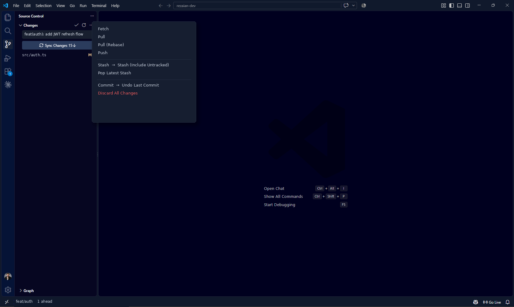
شکل ۱۳ — منوی ··· در Source Control: Fetch، Pull (Rebase)، Stash، Undo Last Commit و Sync در نوار وضعیت.
اگر تعارض آمد، stash حذف نمیشود (pop شکست میخورد). حل کن، بعد drop. apply در این مواقع شفافتر است.
worktree یعنی یک پوشهٔ دوم از همان پروژه، روی شاخهای دیگر. فایلها جدایند، اما تاریخچه (پوشهٔ .git) مشترک است — پس کامیت در پوشهٔ دوم در همان مخزن ثبت میشود.
# از مخزن اصلی git worktree add ../app-hotfix -b hotfix/500 main code -n ../app-hotfix # بعد از اتمام git worktree remove ../app-hotfix git worktree list
قواعد:
remove قبل از پاک کردن پوشهVS Code هر worktree را بهصورت پوشهٔ جدا باز میکند — Source Control مستقل، تاریخچه مشترک.
در monorepo که ۱۰ گیگ است، کل درخت را لازم نداری.
git clone --filter=blob:none --sparse git@github.com:org/mono.git cd mono git sparse-checkout set apps/web packages/ui
--filter=blob:none (partial clone) blobها را تنبلانه میگیرد. GitHub این را پشتیبانی میکند. Scalar (ابزار مایکروسافت) همین ایده را برای ویندوز بزرگ خودکار میکند — فصل ۳۱.
Junior — stash کجا ذخیره میشود؟ refهای refs/stash و کامیتهای merge-مانند در objects.
Mid — کی worktree، کی stash؟ stash برای دقیقه؛ worktree برای ساعت و روز و PR موازی.
Senior — چرا شاخه در دو worktree ممنوع است؟ چون هر دو HEAD و Index میخواهند همان ref را حرکت دهند — مسابقه.
stash@{7} بینامفصل بعد: remote — origin، fetch، pull، push.
Remote فقط یک نام برای آدرس مخزن روی سرور است (معمولاً origin). Tracking یعنی شاخهٔ محلی تو به کدام شاخهٔ سرور وصل است — از روی آن Git میگوید چند کامیت جلوتر یا عقبتری.
origin را بهعنوان نام مستعار URL توضیح دهی-u و شاخهٔ بالادست را تنظیم کنیgit remote -v # origin git@github.com:rezaian-dev/git-lab.git (fetch) # origin git@github.com:rezaian-dev/git-lab.git (push) git remote add origin git@github.com:rezaian-dev/git-lab.git git remote set-url origin git@github.com:rezaian-dev/git-lab.git
در VS Code: Publish Branch اگر origin نباشد، ویزارد GitHub را باز میکند.
| فرمان | چه میکند |
|---|---|
git fetch |
اشیای جدید را میآورد؛ شاخهٔ محلی را حرکت نمیدهد |
git fetch --prune |
refهای حذفشده روی سرور را محلی پاک میکند |
git pull |
fetch + merge (یا rebase اگر تنظیم شده) |
git pull --ff-only |
فقط اگر fast-forward ممکن باشد — امنترین pull |
git fetch origin git log --oneline HEAD..origin/main # چه چیزی میآید؟ git merge --ff-only origin/main
... جداگانه: Fetch / Pull / Push / Pull (Rebase)↑1 ↓2 یعنی ahead/behindgit.autofetch: true در پسزمینه fetch میکندgit fetch origin
git pull --ff-only
git push -u origin HEAD
شکل ۱۴ب — نوار وضعیت: ↑ ahead و ↓ behind. دکمهٔ Sync همان pull سپس push است.
git switch -c feat/auth git push -u origin HEAD # -u = --set-upstream git status -sb # ## feat/auth...origin/feat/auth [ahead 1, behind 2]
git push --force-with-lease # اگر کس دیگری push کرده باشد، رد میشود
--force کورکورانه تاریخچهٔ سرور را عوض میکند. --force-with-lease فقط اگر remote همان چیزی باشد که تو آخرینبار دیدی.
در VS Code هنگام Push اگر rejected شدی، Force Push را نزن مگر روی شاخهٔ شخصی.
در Rulesets باید ممنوع باشد. اگر نیست، همین امروز ممنوعش کن (فصل ۲۷).
Junior — origin اسم خاصی است؟ قرارداد است؛ میتواند github باشد. فقط نام مستعار URL است.
Mid — چرا ff-only؟ جلوی mergeهای اتفاقی و تاریخچهٔ دندانهدار را میگیرد.
Senior — lease چه چیزی را میسنجد؟ هش refs/heads/... روی remote را با remote-tracking محلی مقایسه میکند.
-u عادت شدهفصل بعد: GitHub بهعنوان محصول — ریپو، README، Topics.
صفحهٔ مخزن روی GitHub اولین چیزی است که همکار یا استخدامکننده میبیند. README باید در چند خط بگوید پروژه چیست، چطور اجرا میشود، و چطور مشارکت کنی.
gh یا VS Code بسازی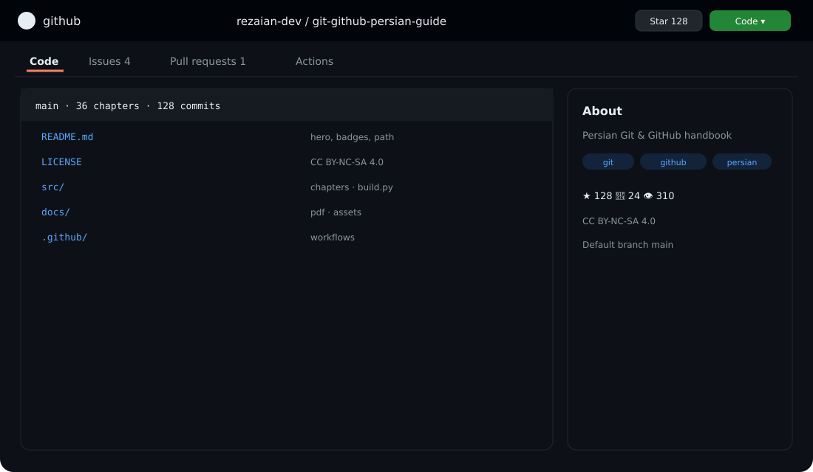
شکل ۱۳ — Code، About، ستاره، شاخهٔ main و README؛ ویترین پروژه.
# 1. وب: New repository — README، gitignore، License # 2. CLI gh repo create git-lab --public --source=. --remote=origin --push # 3. VS Code: Publish to GitHub
تنظیمات حیاتی هنگام ساخت:
mainحداقلها:
از HTML راستچین (dir="rtl") برای فارسی نترس — GitHub آن را رندر میکند. تصویر hero را در docs/assets بگذار نه ریشه.
در سمت راست صفحهٔ ریپو:
git, github, persian, vscode, guideفایلهای اجتماعی:
| فایل | نقش |
|---|---|
LICENSE |
مجوز |
CODE_OF_CONDUCT.md |
رفتار |
CONTRIBUTING.md |
چگونه PR بفرستند |
SECURITY.md |
گزارش آسیبپذیری |
.github/ISSUE_TEMPLATE/ |
قالب باگ/فیچر |
.github/PULL_REQUEST_TEMPLATE.md |
چکلیست PR |
CODEOWNERS |
مالک مسیر |
ریپویی با نام دقیقاً برابر username (rezaian-dev/rezaian-dev) روی پروفایل سنجاق میشود. ویترین شغلی است.
| نوع | چه کسی میبیند | نکتهٔ ۲۰۲۶ |
|---|---|---|
| Public | جهان | Actions رایگان محدود؛ برای نمونه کار عالی |
| Private | تو + همکار دعوتشده | Copilot و Rulesets کامل |
| Internal | فقط Enterprise | بین orgهای یک شرکت |
Junior — README اجباری است؟ از نظر Git نه؛ از نظر استخدام بله.
Mid — فرق squash merge در تنظیمات ریپو؟ Settings → General → Pull Requests: اجازهٔ merge commit / squash / rebase. تیم باید یکی را استاندارد کند.
Senior — CODEOWNERS چگونه merge را قفل میکند؟ اگر Ruleset «Require review from Code Owners» روشن باشد، تغییر در مسیر بدون Approve مالک نمیآید.
gh ساختهایفصل بعد: Fork، clone و رابطه با upstream.
Clone = کپی مخزن روی رایانهٔ تو (با تاریخچه). Fork = کپی مخزن زیر حساب GitHub خودت. PR را باید از fork خودت به مخزن اصلی بفرستی؛ اگر فقط clone کرده باشی و حق push نداشته باشی، PR ساخته نمیشود.
origin و upstream بچینیgit clone git@github.com:rezaian-dev/javascript-persian-guide.git git clone --depth 1 <url> # فقط نوک — سریع، تاریخچه ناقص git clone --filter=blob:none <url> # partial؛ blob تنبل gh repo clone rezaian-dev/javascript-persian-guide
Git: Clone یا Welcome → Clone Git RepositoryGitHub Pull Requests: Forkgit clone git@github.com:org/repo.git
gh repo clone org/repo
gh repo fork org/repo --clone
shallow clone برای CI عالی است. برای کار روزانه bisect و blame را ضعیف میکند. با git fetch --unshallow کاملش کن.
gh repo fork rezaian-dev/javascript-persian-guide --clone=true cd javascript-persian-guide git remote -v # origin تو (fork) # upstream ریپوی اصلی git fetch upstream git switch main git merge --ff-only upstream/main git push origin main
قانون طلایی:
origin/feat/x به upstream/mainدر GitHub دکمهٔ Sync fork همین merge را گرافیکی میکند. در VS Code افزونهٔ PR ریموتها را میشناسد.
در سازمان، معمولاً مستقیم روی ریپو دسترسی write داری:
git switch -c feat/docs origin/main git push -u origin HEAD gh pr create --base main
Fork برای OSS و پیمانکار خارجی است؛ برای همکار تماموقت گام اضافه است.
Junior — فرق clone و download ZIP؟ ZIP بدون .git است؛ تاریخچه و شاخه ندارد.
Mid — چرا دو remote؟ تا بتوانی از upstream بگیر و به origin هل بدهی بدون حق نوشتن روی اصلی.
Senior — fork network چیست؟ گراف ریپوهای مشتقشده؛ GitHub objectها را تا حدی به اشتراک میگذارد. حذف fork تاریخچهٔ PR را پیچیده میکند.
origin/upstream را درست نامگذاری میکنیفصل بعد: Pull Request سطح Senior.
Pull Request یعنی درخواست ادغام شاخهٔ تو در شاخهٔ هدف (معمولاً main). قبل از Merge، دیگران diff را میبینند، نظر میدهند و CI باید سبز باشد.
gh و از VS Code باز کنی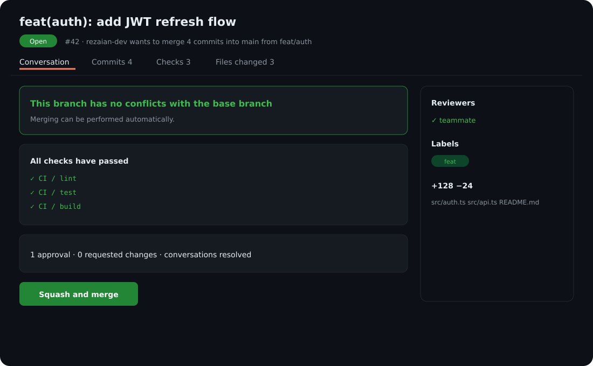
شکل ۱۴ — Conversation، Files، Checks سبز، Able to merge.
git push -u origin HEAD gh pr create --draft --fill --reviewer teammate gh pr view --web gh pr ready # از draft خارج شو
git push -u origin HEAD
gh pr create --draft --fill
gh pr checkout 42
gh pr merge 42 --squash
بدنهٔ خوب:
هدف: زیر ۴۰۰ خط منطقی. اگر بزرگ است، stacked PR یا چند PR متوالی. ریویوکننده خسته Approve دروغین میزند.
هر Push روی شاخهٔ PR، Actions را آتش میزند (فصل ۲۸). مربع سبز Able to merge یعنی:
در VS Code تب Checks همان وضعیت را نشان میدهد.
| روش | تاریخچهٔ main | مناسب |
|---|---|---|
| Merge commit | گره دووالدی | حفظ PR بهعنوان واحد |
| Squash | یک کامیت | شاخهٔ شلوغ / WIP زیاد |
| Rebase and merge | خطی بدون گره merge | تیم متعهد به کامیت تمیز |
تیم باید یکی را قفل کند تا git log یکشکل بماند.
git fetch origin git rebase origin/main # روی شاخهٔ شخصی git push --force-with-lease
تعارض را تو حل کن نه ریویوکننده.
حتی در پروژهٔ شخصی Actions را روشن کن. حافظه عضلهای Production از همینجا ساخته میشود.
Junior — Draft یعنی چه؟ PR قابل merge نیست تا Ready شود؛ سیگنال «نگاه نکن هنوز».
Mid — چرا force-with-lease بعد از rebase؟ چون rebase هش عوض میکند؛ lease جلوی پاک کردن کار همکار روی همان شاخه را میگیرد.
Senior — stacked PR؟ زنجیرهٔ PR که هر کدام روی قبلی است؛ نیازمند ابزار (Graphite یا gh) و توافق تیم.
--draft باز میکنیفصل بعد: فرهنگ Code Review.
Code Review یعنی قبل از Merge، حداقل یک نفر دیگر diff را بخواند. هدف پیدا کردن باگ و انتقال دانش است، نه خرد کردن نویسنده.
پیشوندهای رایج:
| برچسب | معنی |
|---|---|
nit: |
سلیقه؛ اجباری نیست |
suggestion: |
بهتر است |
blocker: |
بدون این Merge نکن |
question: |
نمیفهمم، توضیح بده |
praise: |
این را بیشتر انجام بده |
از ۲۰۲۵ Copilot Code Review هم نظر میدهد؛ آن را لایهٔ اول بدان نه جایگزین انسان. نظر AI را بدون خواندن Approve نکن.
```suggestion)Pending فقط روی ماشین توست. نویسنده چیزی نمیبیند تا Submit کنی.
.env نیستMid — Request Changes یعنی چه؟ Merge معمولاً قفل میشود تا همان نفر یا سیاست re-request برگردد.
Senior — LGTM بدون نگاه؟ بدهی اعتماد. در حادثه، امضای تو روی تاریخچه است. Ruleset «dismiss stale reviews» را روشن کن تا push جدید Approve کهنه را باطل کند.
ریویو مهارت اجتماعی + فنی است. ابزار را در فصل ۱۱ دیدی؛ فرهنگ را اینجا. بدون هر دو، CI فقط تئاتر است.
فصل بعد: GitHub CLI — قدرت ترمینال.
gh بهجای کلیک اضافهgh برنامهٔ رسمی GitHub برای ترمینال است. با آن میتوانی بدون باز کردن مرورگر ریپو بسازی، PR باز کنی، و وضعیت Actions را ببینی.
gh چرخهٔ کامل PR را طی کنی--json و jq اسکریپت کنیgh api برای چیزهایی که فرمان آماده ندارند استفاده کنیgh auth login gh auth setup-git # credential helper gh config set editor "code --wait" gh alias set pv "pr view --web"
gh pr checkout 42 gh pr status gh pr checks gh pr diff gh pr comment --body "nit: نام تابع را rotateTokens بگذار" gh pr merge 42 --squash --delete-branch gh pr list --author "@me" --state open
gh pr create --fill از عنوان کامیتها بدنه میسازد — بعد دستی ویرایش کن.
gh issue create -t "PDF build fails on Windows" -b "steps..." -l bug gh issue develop 18 --checkout # شاخه از روی issue gh issue close 18 --reason completed
gh release create v1.0.0 --generate-notes --title "v1.0.0" gh run list --branch main gh run watch gh run view --log-failed
gh pr list --json number,title,reviewDecision,statusCheckRollup gh api repos/:owner/:repo/actions/runs --jq '.workflow_runs[0].html_url' gh api -X PUT repos/:owner/:repo/actions/permissions -f enabled=true
gh cs create / gh cs ssh محیط ابری را بدون UI میسازد — مفید وقتی لپتاپ ضعیف است یا از موبایل فقط ترمینال داری.
در VS Code ترمینال یکپارچه همان gh را اجرا میکند؛ افزونهٔ PR و CLI مکملاند نه رقیب.
Junior — gh جایگزین git است؟ خیر. git تاریخچه؛ gh API گیتهاب.
Mid — --json چرا مهم است؟ خروجی انسانی ناپایدار است؛ JSON برای CI پایدار است.
Senior — app token در برابر user token؟ GitHub App برای ربات و Actions امنتر است؛ least privilege و audit بهتر.
gh run watch را دیدهایalias شخصی ساختهایفصل بعد: Issues، Projects و Discussions.
Issue برای ثبت باگ و کار است، Project برای برد کارهای تیم، Discussion برای سؤال باز. اینها روی GitHub زندگی میکنند، نه داخل پوشهٔ .git.
## شرح ## گام بازتولید ## انتظار ## واقعیت ## نسخه / محیط ## لاگ
قانون: یک Issue = یک مشکل. «همچنین این را هم درست کنید» را Issue جدا کن و لینک بده (blocked by #12).
کلیدواژههای جادویی در PR:
Fixes #12 — با merge، Issue بسته میشودRefs #12 — فقط لینکbug، feat، docs، good first issue، help wanted، security، wontfix. رنگ مهم نیست؛ قرارداد مهم است.
Projects جدید روی جدول/بورد/زمانبندی است و فیلد سفارشی دارد (تخمین، ناحیه). میتوانی با Actions وقتی PR باز شد کارت بسازی.
# در workflow: gh project item-add
در سازمانها Projects جایگزین Trello داخلی میشود چون به commit و PR وصل است.
| Discussions | Issues | |
|---|---|---|
| سؤال باز | ✓ | ضعیف |
| باگ مشخص | ✓ | |
| RFC / ایده | ✓ | گاهی |
| قابل بستن با PR | ✓ |
آسیبپذیری را Issue عمومی نکن. Security → Advisories یا SECURITY.md. افشای مسئولانه اعتبار میسازد.
Junior — Fixes #n کجا کار میکند؟ در پیام کامیت پیشفرض شاخه یا بدنهٔ PR، وقتی به همان ریپو merge شود.
Senior — Projects v2 داده را کجا نگه میدارد؟ جدا از Issue؛ GraphQL API. Issue میتواند در چند Project باشد.
Fixes # را امتحان کردهایفصل بعد: استراتژی شاخهبندی — GitHub Flow و دوستان.
استراتژی شاخه یعنی تیم توافق کند کد از کجا شروع شود، چطور به main برسد، و چه شاخهای حق زنده ماندن طولانی دارد. شاخهٔ چندهفتهای با main واگرا میشود و merge را سخت میکند.
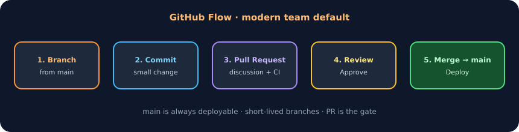
شکل ۱۵ — شاخهٔ کوتاه از main، PR، CI، Review، Merge، Deploy.
main همیشه قابل استقرار استmainمناسب وب، SaaS، اپهایی با feature flag.
شاخههای develop، release/*، hotfix/*، main. برای نرمافزار با نسخهٔ شمارهدار و چرخهٔ QA طولانی (امبدد، موبایل استور با ریویو یکهفتهای) هنوز زنده است. برای استارتاپ وب سربار است.
همه به main (trunk) با شاخههای چندساعته یا مستقیم. فیچر ناتمام پشت feature flag. نیاز به تست عالی و deploy ممتد دارد. گوگل و بسیاری از تیمهای بزرگ اینگونهاند.
| مدل | طول شاخه | پیچیدگی | سرعت تحویل |
|---|---|---|---|
| GitHub Flow | روز | کم | بالا |
| Git Flow | هفته | زیاد | متوسط |
| Trunk | ساعت | کم در Git، زیاد در flag | خیلی بالا |
هر روز rebase سختتر میشود. اگر کار بزرگ است، آن را پشت flag به main تکهتکه تحویل بده.
در VS Code git.branchProtection: ["main"] جلوی کامیت مستقیم را میگیرد — لایهٔ محلی قبل از Ruleset سرور.
Mid — چرا Git Flow با GitHub Actions درد دارد؟ چون دو شاخهٔ بلند باید همیشه همگام شوند؛ CI دوگانه و cherry-pick hotfix.
Senior — environment protection چگونه با Flow جور میشود؟ main → staging خودکار؛ production نیاز به Approve در Environment دارد نه شاخهٔ جداگانهٔ اجباری.
فصل بعد: Conventional Commits — زبانی برای ماشین و انسان.
Conventional Commits یعنی پیام را با قالب ثابت بنویسی: نوع(محدوده): خلاصه. مثال: feat(auth): add refresh token. ابزارها از روی نوع میفهمند نسخه و changelog را چطور عوض کنند.
feat! و BREAKING CHANGE را درست علامت بزنیtype(scope)!: description [body] [footer]
انواع استاندارد: feat، fix، docs، style، refactor، perf، test، build، ci، chore، revert.
feat(auth): add rotating refresh tokens fix(pdf): embed Vazirmatn to avoid tofu glyphs docs(readme): add PDF badge feat(api)!: drop v1 endpoints BREAKING CHANGE: clients must use /v2
Semantic Release:
fix → PATCH (1.2.3 → 1.2.4)feat → MINOR (1.2.3 → 1.3.0)! یا BREAKING CHANGE → MAJOR (1.2.3 → 2.0.0)افزونهٔ Conventional Commits فرم میدهد. یاSnippet:
{ "conv": { "prefix": "cc", "body": "${1|feat,fix,docs,chore,refactor,test,ci|}(${2:scope}): ${3:summary}" } }
پیام را انگلیسی نگه دار اگر تیم بینالمللی است؛ برای مخزن فارسی آموزشی میتوانی بدنه را فارسی و type را انگلیسی بگذاری — قرارداد را در CONTRIBUTING بنویس.
fix(login): handle expired JWT on 401
فعل امری، محدوده، نتیجه.
fixed stuff / WIP / asdf / update files
اگر README و منطق auth را با هم عوض کردی، دو کامیت بساز (add -p). changelog دروغ نگوید.
Junior — type اجباری است؟ برای Git نه؛ برای انسان و ربات در تیمهای مدرن عملاً بله.
Senior — چرا ! و BREAKING هر دو؟ ! در عنوان برای انسان و parser سریع؛ footer برای توضیح مهاجرت. ابزارها هر دو را میفهمند.
فصل بعد: بخش سوم — rebase تعاملی؛ جایی که Senior از Mid جدا میشود.
Rebase کامیتهای شاخهٔ تو را برمیدارد و یکییکی روی نوک یک شاخهٔ دیگر دوباره اعمال میکند. نتیجه تاریخچهٔ خطی است، ولی هش هر کامیت عوض میشود. فقط روی شاخهای که دیگران از آن استفاده نمیکنند این کار را بکن.
rebase -i را برای squash و reword به کار ببری--autosquash و fixup! را بلد باشیشکل ۱۶ — rebase کامیتهای جدید میسازد (D′ و E′)؛ هش عوض میشود.
Git هر کامیت شاخهٔ تو را که در main نیست برمیدارد، main را HEAD میکند، و وصلهها را یکییکی اعمال میکند. نتیجه: تاریخچهٔ خطی. هزینه: هویت جدید برای هر کامیت.
git fetch origin git switch feat/auth git rebase origin/main git push --force-with-lease
... → Pull (Rebase) برای بهروز کردن شاخهGit: Rebase Branch... → origin/mainGit: Rebase ContinueGit: Rebase Abort برای پشیمانیgit fetch origin
git rebase origin/main
git rebase --continue
git rebase --abort
git push --force-with-lease
git rebase -i HEAD~5
ویرایشگر (در این کتاب VS Code با core.editor="code --wait") لیستی میآورد:
pick a11 feat: add login form pick b22 fix: typo in label pick c33 wip pick d44 feat: wire submit pick e55 docs: readme
فرمانها:
| فرمان | معنی |
|---|---|
pick |
نگه دار |
reword |
پیام را عوض کن |
edit |
بایست؛ فایل را درست کن |
squash |
با قبلی یکی کن؛ پیامها را ترکیب کن |
fixup |
با قبلی یکی کن؛ پیام را دور بریز |
drop |
حذف |
ترتیب خطوط = ترتیب تاریخچه. جابهجا کن تا داستان منطقی شود.
اگر origin/main یا شاخهای که همکارت checkout کرده شامل آن هشهاست، rebase = دو تاریخچهٔ موازی و force-push جنگی.
git commit --fixup a11 git rebase -i --autosquash origin/main
--fixup پیامی مثل fixup! feat: add login form میسازد؛ autosquash آن را زیر هدف میچسباند. در Git جدید git commit --squash هم هست.
از Git ۲.۳۸+ پرچم --update-refs شاخههای محلی دیگری که به کامیتهای بازنویسیشده اشاره میکردند را هم حرکت میدهد — نجات از شاخههای یتیم.
# فایل را در VS Code حل و Stage کن git rebase --continue git rebase --abort # پشیمانی کامل git rebase --skip # این وصله را دور بینداز — خطرناک
rerere (فصل ۲۴) تعارض تکراری را به خاطر میسپارد.
وضعیت rebase را نوار زرد بالای ادیتور نشان میدهد. Merge Editor همان UI تعارض فصل ۷ است. تا نوار زرد هست، کامیت عادی نزن.
Mid — چرا PR بعد از rebase «جدید» به نظر میرسد؟ چون هش عوض شده؛ GitHub فایلها را مقایسه میکند نه هش را. Force-with-lease لازم است.
Senior — rebase در برابر merge برای بهروز کردن شاخه؟ rebase تاریخچهٔ PR را خطی و خوانا میکند؛ merge یک گره همگامسازی اضافه میکند. تیم باید یکی را انتخاب کند.
fixup + autosquash را بلدی--abort عضلهای شدهفصل بعد: cherry-pick، revert پیشرفته و rerere.
Cherry-pick یک کامیت مشخص را روی شاخهٔ فعلی کپی میکند (هش جدید). Revert یک کامیت خنثیکننده میسازد. rerere تعارضی را که قبلاً حل کردهای به خاطر میسپارد.
-m درست انجام دهیrerere را روشن کنی تا تعارض تکراری تکرار نشودA..B) را در cherry-pick بفهمیوصلهٔ یک کامیت را روی HEAD فعلی اعمال میکند و کامیت تازه میسازد (هش متفاوت، معمولاً همان پیام).
git switch main git cherry-pick 9f3a1c git cherry-pick -x 9f3a1c # در پیام: (cherry picked from ...) git cherry-pick -n 9f3a1c # بدون کامیت؛ فقط Index/Working git cherry-pick feat/auth~3..feat/auth # چند کامیت (بدون خود ~3)
در VS Code Graph: راستکلیک روی گره → Cherry Pick.
اگر بعداً کل شاخه را merge کنی، cherry-pick قبلی ممکن است تعارض یا تکرار ایجاد کند. -x ردیابی را آسان میکند. برای جریان منظم، hotfix را روی main بزن و به شاخهٔ فیچر rebase کن.
git revert -m 1 <merge-commit> # -m 1 یعنی والد اول (معمولاً main) خط اصلی است
اگر دوباره همان شاخه را بخواهی merge کنی، Git فکر میکند تغییرات قبلاً آمدهاند. راهحل رایج: revertِِ آن revert، یا rebase شاخه روی main جدید.
در GitHub دکمهٔ Revert روی PR ادغامشده یک PR معکوس میسازد — برای تیمها امنتر از revert دستی.
git config --global rerere.enabled true git config --global rerere.autoUpdate true
وقتی تعارضی را حل میکنی، Git جفت «قبل/بعد» را ذخیره میکند. اگر همان تعارض در rebase بعدی آمد، خودش اعمال میکند.
ls .git/rr-cache git rerere diff
بدون rerere، هر rebase هفتگی همان تعارض CSS را دوباره حل میکنی. با rerere، ماشین حافظه میشود.
git cherry-pick --empty=drop در Git جدید کامیتهایی که بعد از اعمال خالیاند را رد میکند. برای picking بازه روی شاخهٔ تقریباً همگام مفید است.
Junior — cherry-pick کپی است؟ کپی تغییر است نه کپی شیء؛ کامیت جدید با والد جدید.
Mid — چرا -m 1؟ merge دو درخت والد دارد؛ باید بگویی نسبت به کدام diff را معکوس کنیم.
Senior — rerere با conflict style diff3؟ پیشنمایش غنیتر است؛ حافظهٔ rerere روی نتیجهٔ staged کار میکند نه روی نشانههای فایل.
-x زدهایفصل بعد: Hooks، commitlint و دروازهٔ کیفیت محلی.
Hook اسکریپتی است که Git در لحظههای مشخص (مثلاً قبل از commit) اجرا میکند. اگر اسکریپت با خطا خارج شود، آن commit یا push انجام نمیشود.
.git/hooks پوشیدنی نیست.git/hooks/ نمونههای *.sample دارد. فعالسازی = حذف پسوند و اجرایی کردن.
cat > .git/hooks/pre-commit << 'EOF' #!/usr/bin/env bash set -euo pipefail files=$(git diff --cached --name-only || true) if printf '%s\n' "$files" | grep -Eq '(^|/)\.env$'; then echo "do not commit .env" >&2 exit 1 fi exit 0 EOF chmod +x .git/hooks/pre-commit
اگر بنویسی echo "$files" | grep ... && exit 1 بدون if، وقتی .env در stage نیست grep کد ۱ برمیگرداند و set -e کل هوک را شکست میدهد — یعنی هیچ کامیتی رد نمیشود. الگوی if grep; then exit 1; fi را استفاده کن.
مشکل: این فایل در مخزن نیست. همکار تو hook ندارد.
| ابزار | مناسب |
|---|---|
| Husky + lint-staged | اکوسیستم JS |
| pre-commit (Python framework) | چندزبانه، YAML |
| lefthook | سریع، Go، موازی |
| GitHub Rulesets | اجبار سمت سرور — دورزدنی نیست |
{ "scripts": { "prepare": "husky" } }
npx --no -- commitlint --edit "$1"
export default { extends: ["@commitlint/config-conventional"] };
npx lint-staged
lint-staged فقط روی فایلهای staged اجرا میشود — سریع.
Hook محلی با --no-verify دور زده میشود. برای قانون واقعی:
commitlint روی PR--force روی mainبرای hotfix وسوسهانگیز است. اگر لازم شد، در PR توضیح بده و CI را اجباری بگذار تا دروازهٔ دوم کار کند.
وظایف lint-staged هنگام Commit از UI هم اجرا میشوند چون همان git commit را صدا میزنند. اگر hook شکست بخورد، VS Code خطا را در Git Output نشان میدهد.
Junior — hook را چطور به GitHub میفرستم؟ نمیفرستی؛ نسخه را در ابزار تیمی (Husky) داخل ریپو میگذاری.
Senior — server-side hook در GitHub؟ GitHub.com hook سفارشی Git ندارد؛ از webhooks، Actions و Rulesets استفاده کن. GitHub Enterprise Server گاهی pre-receive دارد.
فصل بعد: امضا، 2FA، passkey و رازها.
امضای کامیت ثابت میکند این شیء با کلید ثبتشدهٔ تو ساخته شده. 2FA جلوی ورود با رمز تنها به حساب GitHub را میگیرد. secretهای لو رفته را git rm پاک نمیکند — در تاریخچه میمانند.
GitHub کامیت را Verified میگذارد اگر:
در فصل ۲ SSH signing را چیدیم. برای تگ انتشار:
git tag -s v1.0.0 -m "Git GitHub Persian Guide 1.0.0" git push origin v1.0.0
Ruleset میتواند Require signed commits را روی main اجباری کند.
حداقلها:
# SSH ترجیح این کتاب است gh auth token # نشان بده؛ در فایل پروژه نگذار
Secret scanning گیتهاب بسیاری از توکنها را push را رد میکند. اگر رد نشد، فوراً revoke کن — rotate، نه فقط delete فایل.
git rm --cached .env echo .env >> .gitignore git commit -m "chore: stop tracking env" # تاریخچه هنوز راز را دارد!
برای پاک کردن تاریخچه:
git filter-repo (جانشین filter-branch)Force-push همهٔ کلونها را باطل میکند. تیم باید دوباره clone کند.
در VS Code هیچ دکمهای «پاک کردن تاریخچه» ندارد — و نباید داشته باشد.
git.enableCommitSigningsettings.json نگذارJunior — Verified زرد/خاکستری؟ کلید با حساب یکی نیست یا فرمت امضا اشتباه است.
Mid — fine-grained در برابر classic PAT؟ محدود به ریپو، انقضا، permission جداگانه؛ classic practically root است.
Senior — چرا revoke مهمتر از filter-repo است؟ مهاجم ممکن است از قبل clone کرده باشد. پاک کردن تاریخچهٔ عمومی جلوی استفادهٔ توکن زنده را نمیگیرد.
فصل بعد: Rulesets — سیاست مدرن شاخه.
Ruleset مجموعهٔ قوانین روی شاخه است — مثلاً push مستقیم به main ممنوع، CI باید سبز باشد، Merge فقط بعد از Approve. از Branch Protection قدیمی کاملتر است.
| Branch protection | Rulesets | |
|---|---|---|
| تعداد سیاست | یکی per branch | چند لایه قابلترکیب |
| هدف | نام شاخه | الگو (release/**) + tagging |
| Bypass | ضعیف | نقش / تیم / App مشخص |
| سازمان | محدود | ارثبری Enterprise → Org → Repo |
| ارزیابی | — | تاریخچهٔ ارزیابی و بینش |
حداقل سیاست main در ۲۰۲۶:
* @rezaian-dev /src/build.py @rezaian-dev /docs/ @docs-team *.yml @platform-team
آخرین قانونِ مطابق برنده است. بدون Ruleset «code owners»، این فایل فقط مستندات است.
برای Actions:
staging — بدون دروازهproduction — required reviewers + wait timer + restricted secretsحتی اگر شاخه آزاد باشد، deploy به production بدون Approve انسانی نمیرود. از ۲۰۲۵ Immutable Releases هم دارایی و تگ عرضه را قفل میکند.
اگر مستقیم روی main کامیت کنی:
git.branchProtection هشدار میدهدپیام خطا را بخوان؛ معمولاً لینک به کدام rule است.
v* را قفل کن تا کسی تگ نسخه را جابهجا نکند. همراه Immutable Releases، عرضه قابلاثبات میشود.
Mid — linear history یعنی چه؟ فقط fast-forward؛ merge commit روی main ممنوع. با squash یا rebase merge جور است.
Senior — bypass چه کسی باید داشته باشد؟ فقط bot حادثه و چند admin. اگر همه bypass دارند، سیاست تئاتر است.
فصل بعد: GitHub Actions از صفر تا OIDC.
GitHub Actions یعنی با هر رویداد (مثلاً push یا PR) یک گردشکار YAML روی سرور GitHub اجرا شود: تست، lint، ساخت. Secret را در مخزن ذخیره میکنی نه داخل کد.
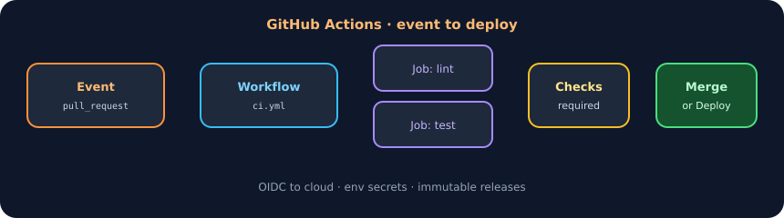
شکل ۱۷ — Event → Workflow → Jobs موازی → Checks → Merge/Deploy.
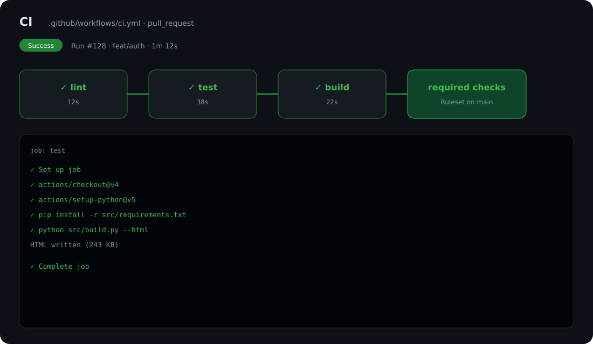
شکل ۱۸ — صفحهٔ run: جابهای lint/test/build و لاگ سبز.
name: CI on: pull_request: push: branches: [main] jobs: test: runs-on: ubuntu-latest steps: - uses: actions/checkout@v4 - uses: actions/setup-python@v5 with: python-version: "3.13" - run: pip install -r src/requirements.txt - run: python src/build.py --html
قواعد:
@v4)؛ برای عرضهٔ حساس روی SHApull_request از fork به secretهای مخزن دسترسی ندارد (امنیت)concurrency را برای لغو runهای کهنه روی همان شاخه بگذاراز ۲۰۲۵ میتوان workflowهای reusable را تو در تو صدا زد (تا سقف مستند GitHub). ماتریس برای چند نسخهٔ Node/Python:
strategy: fail-fast: false matrix: node: [20, 22]
workflow_dispatch حالا تا ۲۵ ورودی دارد — برای ops دستی بهتر از JSON هکی.
permissions: id-token: write contents: read steps: - uses: aws-actions/configure-aws-credentials@v4 with: role-to-assume: arn:aws:iam::123:role/gha aws-region: eu-central-1
GitHub یک JWT کوتاهعمر به ابر میدهد. اگر ریپو لو برود، کلید AWS در Git نیست.
echo ${{ secrets.X }} در لاگ میآید مگر mask شود. حتی mask هم کامل نیست. secret را چاپ نکن.
افزونهٔ GitHub Actions: workflowها، runها، لاگ. gh run watch در ترمینال یکپارچه. روی PR تب Checks همان نتیجه را نشان میدهد.
Junior — runner چیست؟ ماشین (GitHub-hosted یا self-hosted) که stepها را اجرا میکند.
Mid — تفاوت pull_request و pull_request_target؟ دومی در زمینهٔ base با secret اجرا میشود — خطرناک اگر checkout روی کد fork باشد.
Senior — OIDC چه حملهای را میبندد؟ کلیدهای بلندمدت ذخیرهشده در secrets که با log یا memory dump میلکد؛ همچنین چرخش دستی.
فصل بعد: امنیت زنجیرهٔ تأمین روی GitHub.
امنیت زنجیرهٔ تأمین یعنی بدانی وابستگیها، توکنها و تگ انتشار قابل جعل یا تعویض نباشند. Dependabot، CodeQL و Secret Scanning همین لایهاند.
version: 2 updates: - package-ecosystem: pip directory: /src schedule: interval: weekly - package-ecosystem: github-actions directory: / schedule: interval: weekly
دو چهره:
PRهای Dependabot را مثل کد انسان ریویو کن. گاهی breaking است.
on: [push, pull_request] jobs: analyze: runs-on: ubuntu-latest permissions: security-events: write steps: - uses: actions/checkout@v4 - uses: github/codeql-action/init@v3 with: languages: python, javascript - uses: github/codeql-action/analyze@v3
تگ و دارایی release قفل میشوند؛ بازنویسی v1.2.0 ممکن نیست. همراه attestations (SLSA-مانند) میتوانی ثابت کنی این باینری از کدام workflow و کدام commit آمده.
gh attestation verify dist/app.tar.gz --owner rezaian-dev
برای محصول جدی، در workflow SBOM (CycloneDX/SPDX) بساز و به release بچسبان. مشتری سازمانی میپرسد.
uses: some-user/action@main — شاخه متحرک = کد متحرکcurl | bash در CIMid — push protection چیست؟ سرور push را رد میکند اگر secret شناختهشده در diff باشد.
Senior — attestation چه تضمینی است؟ امضای GitHub روی metadata ساخت: workflow، SHA، هویت. Tamper بعد از ساخت را نشان میدهد؛ باگ منطقی داخل کد را نه.
@mainفصل بعد: داخلی Git — packfile، gc، reftable.
Git فایلها را اول جدا و بعد فشرده در packfile نگه میدارد. gc زبالهها را جمع میکند. این فصل وقتی لازم میشود که مخزن باد کرده یا fsck خطا میدهد.
gc و repack را با احتیاط اجرا کنیfsck را برای سلامت دیتابیس به کار ببریدو شکل:
.git/objects/ab/cdef... یک فایل per شیءpack-....pack + .idx — دلتا فشرده، سریع برای fetchgit count-objects -vH git verify-pack -v .git/objects/pack/*.idx | sort -k 3 -n | tail git cat-file -t 9f3a1c git cat-file -s 9f3a1c
git gc looseها را pack میکند، unreachable را بعد از grace period دور میریزد. git gc --prune=now تهاجمی است.
روی سرور شلوغ gc را در maintenance پنجره بزن. git maintenance start زمانبندی امنتری است.
سنت: هر شاخه یک فایل در .git/refs/heads + packed-refs. با صدها هزار ref (Gerrit، monorepo) کند میشود.
git init --ref-format=reftable /tmp/rt
Reftable در مسیر Git ۳.۰ production-ready است. GitHub در مقیاس خودش از سیستمهای مشابه بهره میبرد. برای پروژهٔ معمولی files کافی است.
git fsck --full git fsck --lost-found
dangling commit اغلب کامیتهای rebaseشدهاند — گاهی نجات با git show <hash> و شاخه ساختن.
اگر index.lock ماند (کریش VS Code): فقط وقتی هیچ فرایند Git/Code روی مخزن نیست حذفش کن.
git rev-list --objects --all \ | git cat-file --batch-check='%(objecttype) %(objectname) %(objectsize) %(rest)' \ | awk '/^blob/' | sort -k3 -n | tail
بعد git filter-repo برای حذف باینری accidental. همه باید re-clone کنند.
Mid — چرا clone دوم سریعتر است؟ pack از قبل دلتا شده؛ looseها در مسیر critical نیستند.
Senior — unreachable چه زمانی میمیرد؟ reflog expire (پیشفرض ~90 روز) بعد prune. تا آن موقع reset --hard قابل برگشت است.
count-objects -vH را خواندهایفصل بعد: مخازن بزرگ، partial clone، Scalar، monorepo.
در مخزن خیلی بزرگ، کل تاریخچه و همهٔ فایلها را یکجا clone نکن. Partial clone محتوا را تنبلانه میآورد؛ sparse-checkout فقط پوشههای لازم را روی دیسک میگذارد.
git clone --filter=blob:none git@github.com:org/mono.git git clone --filter=tree:0 <url> # حتی تنبلتر؛ treeها هم بعداً
وقتی فایل را checkout میکنی Git blob را میگیرد. نیاز به پروتکل v2 و سرور پشتیبان (GitHub دارد).
git sparse-checkout init --cone git sparse-checkout set apps/web packages/ui
--cone الگوهای پوشهای سریعتر از globهای پراکنده است.
ابزار مایکروسافت (همراه Git for Windows / قابل نصب جدا): git maintenance، fsmonitor، partial clone را یکجا برای ریپوهای عظیم ویندوز تنظیم میکند. اگر checkout ۳۰ ثانیه طول میکشد، Scalar را امتحان کن نه «لپتاپ نو».
| Monorepo | Polyrepo | |
|---|---|---|
| تغییر چندپروژه | یک PR | چند PR هماهنگ |
| CI | باید path filter شود وگرنه میسوزد | |
| دسترسی | همه همهچیز را میبینند مگر sparse/server | راحتتر per-team |
| ابزار | Nx, Bazel, Turborepo | Actions ساده |
on: pull_request: paths: ["apps/web/**", "packages/ui/**"]
بدون این، هر تغییر README کل مزرعهٔ runner را آتش میزند.
VS Code multi-root برای polyrepo؛ برای monorepo همان sparse + workspace file که فقط پوشههای لازم را نشان میدهد.
Senior — blob:none در برابر LFS؟ LFS باینریهای مشخص را خارج میکند. Partial clone همهٔ blobهای Git را تنبل میکند. اغلب با هم استفاده میشوند.
فصل بعد: Copilot، Coding Agent و AGENTS.md در ۲۰۲۶.
Copilot Coding Agent میتواند از روی Issue شاخه بسازد، کد بزند و Pull Request پیشنویس باز کند. Merge باید با Approve انسان باشد؛ عامل را مثل همکار تازهکار ریویو کن.
AGENTS.md و دستورالعمل ریپو را بنویسی| لایه | کجا | Git چه میشود |
|---|---|---|
| Inline / Chat | VS Code | تو کامیت میکنی |
| Agent mode IDE | VS Code، JetBrains، ... | چند فایل، دستور ترمینال، worktree جدا |
| Coding agent ابری | GitHub.com / gh |
VM، شاخهٔ خودش، draft PR، لاگ نشست |
عامل ابری (GA از ۲۰۲۵): Issue را assign میکنی به Copilot. ماشین مجازی کلون میکند، کد مینویسد، به draft PR پوش میکند. تو باید Approve کنی. سیاستها:
- Conventional Commits - هرگز .env را commit نکن - تست vitest را برای feat جدید بنویس - PDF را با python src/build.py بساز
از Universe ۲۰۲۵ فایل AGENTS.md میتواند عامل سفارشی با ابزار و مرز مشخص تعریف کند. MCP (Model Context Protocol) به Issue، جستوجوی کد و سیستمهای داخلی وصل میشود.
در VS Code ۲۰۲۶ پنجرهٔ Agents: چند نشست، worktree جدا، دیف کنار چت. هر نشست Git هویت خودش را دارد — مثل همکار موازی.
اگر به عامل اجازهٔ push مستقیم به main بدهی، مدل ذهنی این کتاب را دور ریختهای. عامل هم باید از PR رد شود.
Mid — چرا draft PR برای عامل مهم است؟ چون CI تولید را تا بازبینی انسان آتش نمیزند.
Senior — مسئولیت حقوقی کامیت AI؟ نویسنده/Approveکننده انسان است. امضا، review و attestation هنوز روی آدم است.
فصل بعد: سی نکتهٔ طلایی روزانه.
سی نکتهٔ کوتاه برای کار روزانه. هر مورد یک عادت است؛ لازم نیست همه را یکروزه حفظ کنی.
git switch - برگشت به شاخهٔ قبلی.git log -1 --format='%H' هش کامل HEAD.git show HEAD:src/app.ts فایل را از کامیت بخوان بدون checkout.git add -p جراحی hunk.git commit --fixup + rebase --autosquash.git pull --ff-only یا هیچ.git push --force-with-lease نه --force.git fetch --prune شاخهٔ مرده را پاک میکند.alias.lg گراف رنگی.git config --global help.autocorrect 10 فرمان نزدیک را اجرا میکند.Ctrl+Shift+G عضلهٔ اصلی.git.autofetch روشن، Sync آگاهانه.git.branchProtection روی main.code --wait بهعنوان editor گیت.Fixes #id در بدنه.gh pr checks قبل از ping کردن ریویوکننده.gh alias برای کارهای تکراری.dir="rtl" شرم ندارد.Working → restore · Index → restore --staged · کامیت محلی → reset --soft · عمومی → revert · گمشده → reflog
هر سطح: یکی از این سی تا را در مصاحبه بهعنوان عادت روزانهات تعریف کن — بهتر از حفظ flag.
نکته بدون مدل ذهنی شعبده است. اگر فصل ۳ را بلدی، این سی تا ارزاناند.
فصل بعد: کارگاه عملی چهار مینیپروژه.
چهار تمرین عملی از ساخت مخزن تا PR. هر تمرین را خودت اجرا کن؛ فقط خواندن کافی نیست.
gh با هم استفاده کنیهدف: ریپوی learning-git با README فارسی، LICENSE، و دو کامیت Conventional.
mkdir learning-git && cd learning-git git init -b main # README و LICENSE بساز git add README.md LICENSE git commit -m "chore: bootstrap learning repo" gh repo create learning-git --public --source=. --remote=origin --push
در VS Code Publish را هم میتوانی بزنی. معیار موفقیت: کامیت Verified، ریپو با About و Topic.
feat/hello از mainhello.md را تغییر بده، PR باز کن (Draft)echo ok) بگذار تا Check سبز شودمعیار: اسکرین شات Merge Editor در README کارگاه.
.env را کامیت کنrm --cached، gitignore، توکن ساختگی را rotate فرض کنفقط مقدار SECRET=fake .
اگر همین کتاب را میسازی:
- python src/build.py --html # artifact HTML را آپلود کن
PR که CSS را عوض میکند باید HTML را بهعنوان artifact بسازد. معیار: تب Checks در VS Code سبز.
rebase -i برای تمیز کردن پنج کامیت WIPmain در ریپوی خودت (اگر حساب اجازه میدهد)gh pr create بدون مرورگریک gist یا بخش README با فرمانهای استفادهشده و دو اسکرین: Graph قبل/بعد از rebase.
فصل بعد: بیست اشتباه رایج.
بیست اشتباه رایج (از add . کور تا force روی main) و برای هر کدام همان Undo مشخص. قبل از کپی فرمان، ستون «چهکار نکن» را بخوان.
git add . کور: .env و dist میآید. راهحل: -p و gitignore.branchProtection در VS Code.update: Conventional.--force به origin/main: lease + ممنوعیت سرور.rm --cached.clone --recurse-submodules (اگر تیم submodule دارد؛ وگرنه اجتناب)./ و -.@main: pin.تاریخچهٔ دیگران را نمیتوانی بعداً آسان درست کنی.
شفافیت > سرعت جعلی.
شکل ۱۹ — قبل از هر فرمان مخرب، این نقشه را ببین.
سؤال محبوب: «بدترین اشتباه Git تو چه بود؟» صادق باش + بگو از کدام ابزار (reflog، revert، Ruleset) بعدش استفاده کردی. رشد را نشان میدهد.
اشتباه نکردن هدف نیست؛ اشتباه غیرقابلبرگشت نکردن هست. Git برای برگشت ساخته شده مگر force روی عمومی.
فصل بعد: مصاحبه، واژهنامه و نقشه راه.
پرسشهای مصاحبه با جواب کوتاه، جدول واژهٔ فارسی/انگلیسی، و مسیر بعد از کتاب. اگر بتوانی سه درخت و DAG را روی کاغذ بکشی، بیشتر سؤالها همان مدلاند.
Junior
pull در برابر fetch؟ pull = fetch + ادغام/rebase.Mid
reset --soft/--mixed/--hard؟ کدام درختها حرکت میکنند (فصل ۸).A...B در diff؟ از جد مشترک؛ همان نمای PR.Senior / Staff
-m 1 و پیامد merge دوباره.bisect run + تست قطعی.جواب را ۲ دقیقه روی کاغذ بکش نه حفظ کن. اگر سهدرخت و DAG را کشیدی، ۸۰٪ پرسشها حل است.
| فارسی | English |
|---|---|
| مخزن | Repository |
| درخت کاری | Working Tree |
| نمایه / استیج | Index / Staging Area |
| کامیت / ثبت | Commit |
| شاخه | Branch |
| تگ | Tag |
| اشارهٔ HEAD | HEAD |
| جداشده | Detached HEAD |
| واکشی | Fetch |
| ادغام | Merge |
| بازچینش | Rebase |
| گزینش گیلاس | Cherry-pick |
| خنثیسازی | Revert |
| بازیابی فایل | Restore |
| بازنشانی اشارهگر | Reset |
| قفسهٔ موقت | Stash |
| درخت کار دوم | Worktree |
| تعارض | Conflict |
| درخواست ادغام | Pull Request |
| انشعاب حساب | Fork |
| بالادست | Upstream |
| ردیابی | Tracking Branch |
| گراف جهتدار بدون دور | DAG |
| تودهٔ فشرده | Packfile |
| جمعآوری زباله | Garbage Collection |
| قلاب | Hook |
| مجموعه قواعد | Ruleset |
| صاحبان کد | CODEOWNERS |
| گواهی ساخت | Attestation |
| کلون ناقص | Partial Clone |
| نادیدهگیری تنک | Sparse Checkout |
| امضای تأییدشده | Verified Signature |
| عامل کدنویس | Coding Agent |
جدول را از راست به چپ بخوان؛ ستون انگلیسی برای جستوجوی مستندات رسمی است.
gh؛ ترمینال برای rebase -i.مجموعهٔ فارسی همراه:
اگر بتوانی روی کاغذ سه درخت، DAG، Undo عمومی/خصوصی و مسیر PR را بکشی، سطح عالی را لمس کردهای. بقیه تجربه است.
حالا برو تاریخچه را درست بنویس.
اگر این کتاب برایتان مفید بود، آن را با تیمتان به اشتراک بگذارید. Git فقط فرمان نیست؛ مدل ذهنی زمان، همکاری و کیفیت است.